Code
pacman::p_load(sf, tidyverse, tmap, SpatialAcc, ggplot2, ggstatsplot, sp, reshape2)Singapore is experiencing an ageing population, with an increasing proportion of the citizens aged 65 and older by 11.7% compared to 10 years ago. In addition, the life expectancy of Singaporeans has been steadily rising over the past five decades. This has prompted the government to commit to building more eldercare facilities nationwide. Alongside this has come a push for Active Ageing to encourage the elderly to “stay active, healthy and socially engaged”. To achieve this goal, the government has also been trying to increase the number of active ageing centres and possible locations for activities to make it more accessible to seniors.
Our project would like to understand what the current distribution of eldercare facilities and amenities is across Singapore and selected planning areas within Singapore. We want to investigate whether there are enough facilities and amenities to ensure that the elderly not just age healthily, but age well. We also want to understand whether the facilities are spatially randomly distributed, and whether they are accessible from places of demand. In this particular take-home exercise, out focus will be on the accesibility of the following facilities from residential areas of elderly demand:
Eldercare centres: Shared places of activities and bonding targeted at the elderly
Community gardens: Community gardens where the elderly can pursue their gardening hobbies, or hang out with other residents
Community Centres: Shared places in the residential area, where residents from different walks can and bond over activities. There are activities targeted specifically at the elderly, such as cooking workshops and dancing classes, helping them maintain
Parks: Shared public places where the elderly can engage in outdoor physical activities to maintain an active lifestyle
CHAS clinics: Clinics with CHAS (Community Health Assist Scheme), which allow eligible elderly to get access to medical services at subsidized rates.
Hospitals: Hospitals that provide more thorough and comprehensive health services to the elderly.
In this take-home exercise, our objective is to model geographical accessibility of the abovementioned 6 facilities relevant to the elderly using R’s geospatial analysis packages.
Through this exercise, we will conduct the following procedures
Install and load relevant R packages
Import data of various formats (shapefile, geojson, kml, csv)
Clean and wrangle data into our desired formats
Compute accessibility measure using Hansen’s potential model, KD2SFCA model, and Spatial Accessibility Method
Visualize accessibility measures using tmap and ggplot2 packages
| Dataset | Notes |
|---|---|
| Singapore Residents by Planning Area / Subzone, Age Group, Sex and Type of Dwelling, June 2023 |
|
| Master Plan 2019 Subzone Boundary (No Sea) |
|
| Eldercare Services |
|
| Pois Data Set |
|
| Community in Bloom (CIB) |
|
| CHAS clinics |
|
In this exercise, the following R packages would be used:
Then, to install and/or load the R packages, we can use p_load() from the pacman package.
pacman::p_load(sf, tidyverse, tmap, SpatialAcc, ggplot2, ggstatsplot, sp, reshape2)Let’s begin by introducing and preparing our geospatial data set in R!
To import geospatial data, we will be using st_read() from the sf package.
mpsz2019 <- st_read("data/MasterPlan2019SubzoneBoundaryNoSeaGEOJSON.geojson")mpsz2019Simple feature collection with 332 features and 2 fields
Geometry type: MULTIPOLYGON
Dimension: XY, XYZ
Bounding box: xmin: 103.6057 ymin: 1.158699 xmax: 104.0885 ymax: 1.470775
z_range: zmin: 0 zmax: 0
Geodetic CRS: WGS 84
First 10 features:
Name
1 kml_1
2 kml_2
3 kml_3
4 kml_4
5 kml_5
6 kml_6
7 kml_7
8 kml_8
9 kml_9
10 kml_10
Description
1 <center><table><tr><th colspan='2' align='center'><em>Attributes</em></th></tr><tr bgcolor="#E3E3F3"> <th>SUBZONE_NO</th> <td>12</td> </tr><tr bgcolor=""> <th>SUBZONE_N</th> <td>DEPOT ROAD</td> </tr><tr bgcolor="#E3E3F3"> <th>SUBZONE_C</th> <td>BMSZ12</td> </tr><tr bgcolor=""> <th>CA_IND</th> <td>N</td> </tr><tr bgcolor="#E3E3F3"> <th>PLN_AREA_N</th> <td>BUKIT MERAH</td> </tr><tr bgcolor=""> <th>PLN_AREA_C</th> <td>BM</td> </tr><tr bgcolor="#E3E3F3"> <th>REGION_N</th> <td>CENTRAL REGION</td> </tr><tr bgcolor=""> <th>REGION_C</th> <td>CR</td> </tr><tr bgcolor="#E3E3F3"> <th>INC_CRC</th> <td>C22DED671DE2A940</td> </tr><tr bgcolor=""> <th>FMEL_UPD_D</th> <td>20191223152313</td> </tr></table></center>
2 <center><table><tr><th colspan='2' align='center'><em>Attributes</em></th></tr><tr bgcolor="#E3E3F3"> <th>SUBZONE_NO</th> <td>2</td> </tr><tr bgcolor=""> <th>SUBZONE_N</th> <td>BUKIT MERAH</td> </tr><tr bgcolor="#E3E3F3"> <th>SUBZONE_C</th> <td>BMSZ02</td> </tr><tr bgcolor=""> <th>CA_IND</th> <td>N</td> </tr><tr bgcolor="#E3E3F3"> <th>PLN_AREA_N</th> <td>BUKIT MERAH</td> </tr><tr bgcolor=""> <th>PLN_AREA_C</th> <td>BM</td> </tr><tr bgcolor="#E3E3F3"> <th>REGION_N</th> <td>CENTRAL REGION</td> </tr><tr bgcolor=""> <th>REGION_C</th> <td>CR</td> </tr><tr bgcolor="#E3E3F3"> <th>INC_CRC</th> <td>085EF219A5A1AEAD</td> </tr><tr bgcolor=""> <th>FMEL_UPD_D</th> <td>20191223152313</td> </tr></table></center>
3 <center><table><tr><th colspan='2' align='center'><em>Attributes</em></th></tr><tr bgcolor="#E3E3F3"> <th>SUBZONE_NO</th> <td>3</td> </tr><tr bgcolor=""> <th>SUBZONE_N</th> <td>CHINATOWN</td> </tr><tr bgcolor="#E3E3F3"> <th>SUBZONE_C</th> <td>OTSZ03</td> </tr><tr bgcolor=""> <th>CA_IND</th> <td>Y</td> </tr><tr bgcolor="#E3E3F3"> <th>PLN_AREA_N</th> <td>OUTRAM</td> </tr><tr bgcolor=""> <th>PLN_AREA_C</th> <td>OT</td> </tr><tr bgcolor="#E3E3F3"> <th>REGION_N</th> <td>CENTRAL REGION</td> </tr><tr bgcolor=""> <th>REGION_C</th> <td>CR</td> </tr><tr bgcolor="#E3E3F3"> <th>INC_CRC</th> <td>EF2B9A91AF49E025</td> </tr><tr bgcolor=""> <th>FMEL_UPD_D</th> <td>20191223152313</td> </tr></table></center>
4 <center><table><tr><th colspan='2' align='center'><em>Attributes</em></th></tr><tr bgcolor="#E3E3F3"> <th>SUBZONE_NO</th> <td>4</td> </tr><tr bgcolor=""> <th>SUBZONE_N</th> <td>PHILLIP</td> </tr><tr bgcolor="#E3E3F3"> <th>SUBZONE_C</th> <td>DTSZ04</td> </tr><tr bgcolor=""> <th>CA_IND</th> <td>Y</td> </tr><tr bgcolor="#E3E3F3"> <th>PLN_AREA_N</th> <td>DOWNTOWN CORE</td> </tr><tr bgcolor=""> <th>PLN_AREA_C</th> <td>DT</td> </tr><tr bgcolor="#E3E3F3"> <th>REGION_N</th> <td>CENTRAL REGION</td> </tr><tr bgcolor=""> <th>REGION_C</th> <td>CR</td> </tr><tr bgcolor="#E3E3F3"> <th>INC_CRC</th> <td>615D4EDDEF809F8E</td> </tr><tr bgcolor=""> <th>FMEL_UPD_D</th> <td>20191223152313</td> </tr></table></center>
5 <center><table><tr><th colspan='2' align='center'><em>Attributes</em></th></tr><tr bgcolor="#E3E3F3"> <th>SUBZONE_NO</th> <td>5</td> </tr><tr bgcolor=""> <th>SUBZONE_N</th> <td>RAFFLES PLACE</td> </tr><tr bgcolor="#E3E3F3"> <th>SUBZONE_C</th> <td>DTSZ05</td> </tr><tr bgcolor=""> <th>CA_IND</th> <td>Y</td> </tr><tr bgcolor="#E3E3F3"> <th>PLN_AREA_N</th> <td>DOWNTOWN CORE</td> </tr><tr bgcolor=""> <th>PLN_AREA_C</th> <td>DT</td> </tr><tr bgcolor="#E3E3F3"> <th>REGION_N</th> <td>CENTRAL REGION</td> </tr><tr bgcolor=""> <th>REGION_C</th> <td>CR</td> </tr><tr bgcolor="#E3E3F3"> <th>INC_CRC</th> <td>72107B11807074F4</td> </tr><tr bgcolor=""> <th>FMEL_UPD_D</th> <td>20191223152313</td> </tr></table></center>
6 <center><table><tr><th colspan='2' align='center'><em>Attributes</em></th></tr><tr bgcolor="#E3E3F3"> <th>SUBZONE_NO</th> <td>4</td> </tr><tr bgcolor=""> <th>SUBZONE_N</th> <td>CHINA SQUARE</td> </tr><tr bgcolor="#E3E3F3"> <th>SUBZONE_C</th> <td>OTSZ04</td> </tr><tr bgcolor=""> <th>CA_IND</th> <td>Y</td> </tr><tr bgcolor="#E3E3F3"> <th>PLN_AREA_N</th> <td>OUTRAM</td> </tr><tr bgcolor=""> <th>PLN_AREA_C</th> <td>OT</td> </tr><tr bgcolor="#E3E3F3"> <th>REGION_N</th> <td>CENTRAL REGION</td> </tr><tr bgcolor=""> <th>REGION_C</th> <td>CR</td> </tr><tr bgcolor="#E3E3F3"> <th>INC_CRC</th> <td>B609DF5587626C8F</td> </tr><tr bgcolor=""> <th>FMEL_UPD_D</th> <td>20191223152313</td> </tr></table></center>
7 <center><table><tr><th colspan='2' align='center'><em>Attributes</em></th></tr><tr bgcolor="#E3E3F3"> <th>SUBZONE_NO</th> <td>10</td> </tr><tr bgcolor=""> <th>SUBZONE_N</th> <td>TIONG BAHRU</td> </tr><tr bgcolor="#E3E3F3"> <th>SUBZONE_C</th> <td>BMSZ10</td> </tr><tr bgcolor=""> <th>CA_IND</th> <td>N</td> </tr><tr bgcolor="#E3E3F3"> <th>PLN_AREA_N</th> <td>BUKIT MERAH</td> </tr><tr bgcolor=""> <th>PLN_AREA_C</th> <td>BM</td> </tr><tr bgcolor="#E3E3F3"> <th>REGION_N</th> <td>CENTRAL REGION</td> </tr><tr bgcolor=""> <th>REGION_C</th> <td>CR</td> </tr><tr bgcolor="#E3E3F3"> <th>INC_CRC</th> <td>A0FB4B68155D164A</td> </tr><tr bgcolor=""> <th>FMEL_UPD_D</th> <td>20191223152313</td> </tr></table></center>
8 <center><table><tr><th colspan='2' align='center'><em>Attributes</em></th></tr><tr bgcolor="#E3E3F3"> <th>SUBZONE_NO</th> <td>12</td> </tr><tr bgcolor=""> <th>SUBZONE_N</th> <td>BAYFRONT SUBZONE</td> </tr><tr bgcolor="#E3E3F3"> <th>SUBZONE_C</th> <td>DTSZ12</td> </tr><tr bgcolor=""> <th>CA_IND</th> <td>Y</td> </tr><tr bgcolor="#E3E3F3"> <th>PLN_AREA_N</th> <td>DOWNTOWN CORE</td> </tr><tr bgcolor=""> <th>PLN_AREA_C</th> <td>DT</td> </tr><tr bgcolor="#E3E3F3"> <th>REGION_N</th> <td>CENTRAL REGION</td> </tr><tr bgcolor=""> <th>REGION_C</th> <td>CR</td> </tr><tr bgcolor="#E3E3F3"> <th>INC_CRC</th> <td>197F5E664DA4D5E1</td> </tr><tr bgcolor=""> <th>FMEL_UPD_D</th> <td>20191223152313</td> </tr></table></center>
9 <center><table><tr><th colspan='2' align='center'><em>Attributes</em></th></tr><tr bgcolor="#E3E3F3"> <th>SUBZONE_NO</th> <td>4</td> </tr><tr bgcolor=""> <th>SUBZONE_N</th> <td>TIONG BAHRU STATION</td> </tr><tr bgcolor="#E3E3F3"> <th>SUBZONE_C</th> <td>BMSZ04</td> </tr><tr bgcolor=""> <th>CA_IND</th> <td>N</td> </tr><tr bgcolor="#E3E3F3"> <th>PLN_AREA_N</th> <td>BUKIT MERAH</td> </tr><tr bgcolor=""> <th>PLN_AREA_C</th> <td>BM</td> </tr><tr bgcolor="#E3E3F3"> <th>REGION_N</th> <td>CENTRAL REGION</td> </tr><tr bgcolor=""> <th>REGION_C</th> <td>CR</td> </tr><tr bgcolor="#E3E3F3"> <th>INC_CRC</th> <td>91FFE927ABE3E4DB</td> </tr><tr bgcolor=""> <th>FMEL_UPD_D</th> <td>20191223152313</td> </tr></table></center>
10 <center><table><tr><th colspan='2' align='center'><em>Attributes</em></th></tr><tr bgcolor="#E3E3F3"> <th>SUBZONE_NO</th> <td>6</td> </tr><tr bgcolor=""> <th>SUBZONE_N</th> <td>CLIFFORD PIER</td> </tr><tr bgcolor="#E3E3F3"> <th>SUBZONE_C</th> <td>DTSZ06</td> </tr><tr bgcolor=""> <th>CA_IND</th> <td>Y</td> </tr><tr bgcolor="#E3E3F3"> <th>PLN_AREA_N</th> <td>DOWNTOWN CORE</td> </tr><tr bgcolor=""> <th>PLN_AREA_C</th> <td>DT</td> </tr><tr bgcolor="#E3E3F3"> <th>REGION_N</th> <td>CENTRAL REGION</td> </tr><tr bgcolor=""> <th>REGION_C</th> <td>CR</td> </tr><tr bgcolor="#E3E3F3"> <th>INC_CRC</th> <td>945CC212CA80626F</td> </tr><tr bgcolor=""> <th>FMEL_UPD_D</th> <td>20191223152313</td> </tr></table></center>
geometry
1 MULTIPOLYGON Z (((103.8145 ...
2 MULTIPOLYGON Z (((103.8221 ...
3 MULTIPOLYGON Z (((103.8438 ...
4 MULTIPOLYGON Z (((103.8496 ...
5 MULTIPOLYGON Z (((103.8525 ...
6 MULTIPOLYGON Z (((103.8486 ...
7 MULTIPOLYGON Z (((103.8311 ...
8 MULTIPOLYGON Z (((103.8589 ...
9 MULTIPOLYGON Z (((103.8283 ...
10 MULTIPOLYGON Z (((103.8552 ...From the above, we can see that the mpsz2019 data is a multipolygon data in geodetic CRS WGS84, with Z dimensions.
eldercare_services <- st_read(dsn = "/Users/binhui-ong/IS415-GAA/Take-home_Ex/Take-home_Ex03/data",
layer = "ELDERCARE")eldercare_servicesSimple feature collection with 133 features and 18 fields
Geometry type: POINT
Dimension: XY
Bounding box: xmin: 14481.92 ymin: 28218.43 xmax: 41665.14 ymax: 46804.9
Projected CRS: SVY21
First 10 features:
OBJECTID ADDRESSBLO ADDRESSBUI ADDRESSPOS
1 1 <NA> <NA> 601318
2 2 <NA> <NA> 462509
3 3 <NA> <NA> 640190
4 4 <NA> <NA> 190005
5 5 <NA> <NA> 160044
6 6 <NA> <NA> 160117
7 7 <NA> <NA> 523499
8 8 <NA> <NA> 731569
9 9 <NA> <NA> 651210
10 10 <NA> <NA> 540182
ADDRESSSTR ADDRESSTYP DESCRIPTIO HYPERLINK
1 318A Jurong East Avenue 1 #02-308 <NA> <NA> <NA>
2 Blk 509B Bedok North Street 3 #02-157 <NA> <NA> <NA>
3 Blk 190 Boon Lay Drive #01-242 <NA> <NA> <NA>
4 5 Beach Rd #02-4943 <NA> <NA> <NA>
5 Blk 44 Beo Crescent #01-67 <NA> <NA> <NA>
6 Blk 117 Jalan Bukit Merah #01-1683 <NA> <NA> <NA>
7 499C Tampines Ave 9 #01-256 <NA> <NA> <NA>
8 569A Champion Way #01-346 <NA> <NA> <NA>
9 210A Bukit Batok St 21 #01-294 <NA> <NA> <NA>
10 Blk 182 Rivervale Crescent\n#01-311 <NA> <NA> <NA>
LANDXADDRE LANDYADDRE
1 0 0
2 0 0
3 0 0
4 0 0
5 0 0
6 0 0
7 0 0
8 0 0
9 0 0
10 0 0
NAME PHOTOURL
1 Yuhua Senior Activity Centre <NA>
2 THK SAC @ Kaki Bukit <NA>
3 THK SAC @ Boon Lay <NA>
4 PEACE-Connect Senior Activity Centre@5 <NA>
5 THK SAC @ Beo Crescent <NA>
6 Silver ACE @ Bukit Merah <NA>
7 Lions Befrienders Senior Activity Centre @ Tampines Blk 499C <NA>
8 Care Corner Senior Activity Centre (WL569) <NA>
9 Fei Yue Senior Activity Centre (Bukit Batok Branch) <NA>
10 COMNET Senior Activity Centre @ 182 Rivervale Crescent <NA>
ADDRESSFLO INC_CRC FMEL_UPD_D ADDRESSUNI X_ADDR Y_ADDR
1 <NA> 2B0DB92FDD914FFC 2016-07-28 <NA> 16614.08 36639.12
2 <NA> 82728FA30612F3FD 2016-07-28 <NA> 38803.81 35098.78
3 <NA> DE7A8D4EA0BD1D9B 2016-07-28 <NA> 14481.92 36357.61
4 <NA> A2C058FC5785F7FE 2016-07-28 <NA> 31505.35 31853.52
5 <NA> 9DBFD51E056AEE70 2016-07-28 <NA> 27218.35 30135.49
6 <NA> 169DABA5B6ECEA87 2016-07-28 <NA> 27278.94 29350.17
7 <NA> 5DB6B9F0BF276F6D 2016-07-28 <NA> 41665.14 37956.92
8 <NA> 4DC6800E9BB385BE 2016-07-28 <NA> 23147.94 45761.17
9 <NA> EFBD712DA5DD6FEC 2016-07-28 <NA> 18820.58 36396.32
10 <NA> 6BB0D7698D7B4C7D 2016-07-28 <NA> 36446.37 41376.90
geometry
1 POINT (16614.08 36639.12)
2 POINT (38803.81 35098.78)
3 POINT (14481.92 36357.61)
4 POINT (31505.35 31853.52)
5 POINT (27218.35 30135.49)
6 POINT (27278.94 29350.17)
7 POINT (41665.14 37956.92)
8 POINT (23147.94 45761.17)
9 POINT (18820.58 36396.32)
10 POINT (36446.37 41376.9)The eldercare_services data set is point data, with dimensions XY and CRS SVY21.
gardensg <- st_read(dsn = "/Users/binhui-ong/IS415-GAA/Take-home_Ex/Take-home_Ex03/data/CommunityinBloomCIB.kml")gardensgSimple feature collection with 1586 features and 2 fields
Geometry type: POINT
Dimension: XYZ
Bounding box: xmin: 103.6337 ymin: 1.247904 xmax: 103.9901 ymax: 1.46195
z_range: zmin: 0 zmax: 0
Geodetic CRS: WGS 84
First 10 features:
Name
1 Boon Lay Zone F Residents' Network
2 Bishan Home (For The Intellectually Disabled)
3 Lion's Home for the Elders (Bishan) Senior Care Centre
4 Zion Kindergarten (Bishan)
5 Macpherson Zone B Residents' Committee
6 Kuo Chuan Presbyterian Primary School
7 Toa Payoh East Zone '5' Residents' Committee
8 CHIJ Katong Convent (Secondary) School
9 Kuo Chuan Presbyterian Secondary School
10 Tampines Grace RN (Greenlace, Greenforest, Green Flora & Tapestry)
Description
1 <html xmlns:fo="http://www.w3.org/1999/XSL/Format" xmlns:msxsl="urn:schemas-microsoft-com:xslt"> <head> <META http-equiv="Content-Type" content="text/html"> <meta http-equiv="content-type" content="text/html; charset=UTF-8"> </head> <body style="margin:0px 0px 0px 0px;overflow:auto;background:#FFFFFF;"> <table style="font-family:Arial,Verdana,Times;font-size:12px;text-align:left;width:100%;border-collapse:collapse;padding:3px 3px 3px 3px"> <tr style="text-align:center;font-weight:bold;background:#9CBCE2"> <td>Boon Lay Zone F Residents' Network</td> </tr> <tr> <td> <table style="font-family:Arial,Verdana,Times;font-size:12px;text-align:left;width:100%;border-spacing:0px; padding:3px 3px 3px 3px"> <tr> <td>GARDENID</td> <td>1</td> </tr> <tr bgcolor="#D4E4F3"> <td>GARDEN_NAME</td> <td>Boon Lay Zone F Residents' Network</td> </tr> <tr> <td>LATITUDE</td> <td>1.344691</td> </tr> <tr bgcolor="#D4E4F3"> <td>LONGITUDE</td> <td>103.702112</td> </tr> </table> </td> </tr> </table> </body><script type="text/javascript"> function changeImage(attElement, nameElement) { document.getElementById('imageAttachment').src = attElement; document.getElementById('imageName').innerHTML = nameElement;} </script></html>
2 <html xmlns:fo="http://www.w3.org/1999/XSL/Format" xmlns:msxsl="urn:schemas-microsoft-com:xslt"> <head> <META http-equiv="Content-Type" content="text/html"> <meta http-equiv="content-type" content="text/html; charset=UTF-8"> </head> <body style="margin:0px 0px 0px 0px;overflow:auto;background:#FFFFFF;"> <table style="font-family:Arial,Verdana,Times;font-size:12px;text-align:left;width:100%;border-collapse:collapse;padding:3px 3px 3px 3px"> <tr style="text-align:center;font-weight:bold;background:#9CBCE2"> <td>Bishan Home (For The Intellectually Disabled)</td> </tr> <tr> <td> <table style="font-family:Arial,Verdana,Times;font-size:12px;text-align:left;width:100%;border-spacing:0px; padding:3px 3px 3px 3px"> <tr> <td>GARDENID</td> <td>2</td> </tr> <tr bgcolor="#D4E4F3"> <td>GARDEN_NAME</td> <td>Bishan Home (For The Intellectually Disabled)</td> </tr> <tr> <td>LATITUDE</td> <td>1.347525</td> </tr> <tr bgcolor="#D4E4F3"> <td>LONGITUDE</td> <td>103.854656</td> </tr> </table> </td> </tr> </table> </body><script type="text/javascript"> function changeImage(attElement, nameElement) { document.getElementById('imageAttachment').src = attElement; document.getElementById('imageName').innerHTML = nameElement;} </script></html>
3 <html xmlns:fo="http://www.w3.org/1999/XSL/Format" xmlns:msxsl="urn:schemas-microsoft-com:xslt"> <head> <META http-equiv="Content-Type" content="text/html"> <meta http-equiv="content-type" content="text/html; charset=UTF-8"> </head> <body style="margin:0px 0px 0px 0px;overflow:auto;background:#FFFFFF;"> <table style="font-family:Arial,Verdana,Times;font-size:12px;text-align:left;width:100%;border-collapse:collapse;padding:3px 3px 3px 3px"> <tr style="text-align:center;font-weight:bold;background:#9CBCE2"> <td>Lion's Home for the Elders (Bishan) Senior Care Centre</td> </tr> <tr> <td> <table style="font-family:Arial,Verdana,Times;font-size:12px;text-align:left;width:100%;border-spacing:0px; padding:3px 3px 3px 3px"> <tr> <td>GARDENID</td> <td>3</td> </tr> <tr bgcolor="#D4E4F3"> <td>GARDEN_NAME</td> <td>Lion's Home for the Elders (Bishan) Senior Care Centre</td> </tr> <tr> <td>LATITUDE</td> <td>1.349261</td> </tr> <tr bgcolor="#D4E4F3"> <td>LONGITUDE</td> <td>103.853511</td> </tr> </table> </td> </tr> </table> </body><script type="text/javascript"> function changeImage(attElement, nameElement) { document.getElementById('imageAttachment').src = attElement; document.getElementById('imageName').innerHTML = nameElement;} </script></html>
4 <html xmlns:fo="http://www.w3.org/1999/XSL/Format" xmlns:msxsl="urn:schemas-microsoft-com:xslt"> <head> <META http-equiv="Content-Type" content="text/html"> <meta http-equiv="content-type" content="text/html; charset=UTF-8"> </head> <body style="margin:0px 0px 0px 0px;overflow:auto;background:#FFFFFF;"> <table style="font-family:Arial,Verdana,Times;font-size:12px;text-align:left;width:100%;border-collapse:collapse;padding:3px 3px 3px 3px"> <tr style="text-align:center;font-weight:bold;background:#9CBCE2"> <td>Zion Kindergarten (Bishan)</td> </tr> <tr> <td> <table style="font-family:Arial,Verdana,Times;font-size:12px;text-align:left;width:100%;border-spacing:0px; padding:3px 3px 3px 3px"> <tr> <td>GARDENID</td> <td>4</td> </tr> <tr bgcolor="#D4E4F3"> <td>GARDEN_NAME</td> <td>Zion Kindergarten (Bishan)</td> </tr> <tr> <td>LATITUDE</td> <td>1.347374</td> </tr> <tr bgcolor="#D4E4F3"> <td>LONGITUDE</td> <td>103.854621</td> </tr> </table> </td> </tr> </table> </body><script type="text/javascript"> function changeImage(attElement, nameElement) { document.getElementById('imageAttachment').src = attElement; document.getElementById('imageName').innerHTML = nameElement;} </script></html>
5 <html xmlns:fo="http://www.w3.org/1999/XSL/Format" xmlns:msxsl="urn:schemas-microsoft-com:xslt"> <head> <META http-equiv="Content-Type" content="text/html"> <meta http-equiv="content-type" content="text/html; charset=UTF-8"> </head> <body style="margin:0px 0px 0px 0px;overflow:auto;background:#FFFFFF;"> <table style="font-family:Arial,Verdana,Times;font-size:12px;text-align:left;width:100%;border-collapse:collapse;padding:3px 3px 3px 3px"> <tr style="text-align:center;font-weight:bold;background:#9CBCE2"> <td>Macpherson Zone B Residents' Committee</td> </tr> <tr> <td> <table style="font-family:Arial,Verdana,Times;font-size:12px;text-align:left;width:100%;border-spacing:0px; padding:3px 3px 3px 3px"> <tr> <td>GARDENID</td> <td>5</td> </tr> <tr bgcolor="#D4E4F3"> <td>GARDEN_NAME</td> <td>Macpherson Zone B Residents' Committee</td> </tr> <tr> <td>LATITUDE</td> <td>1.327456</td> </tr> <tr bgcolor="#D4E4F3"> <td>LONGITUDE</td> <td>103.887222</td> </tr> </table> </td> </tr> </table> </body><script type="text/javascript"> function changeImage(attElement, nameElement) { document.getElementById('imageAttachment').src = attElement; document.getElementById('imageName').innerHTML = nameElement;} </script></html>
6 <html xmlns:fo="http://www.w3.org/1999/XSL/Format" xmlns:msxsl="urn:schemas-microsoft-com:xslt"> <head> <META http-equiv="Content-Type" content="text/html"> <meta http-equiv="content-type" content="text/html; charset=UTF-8"> </head> <body style="margin:0px 0px 0px 0px;overflow:auto;background:#FFFFFF;"> <table style="font-family:Arial,Verdana,Times;font-size:12px;text-align:left;width:100%;border-collapse:collapse;padding:3px 3px 3px 3px"> <tr style="text-align:center;font-weight:bold;background:#9CBCE2"> <td>Kuo Chuan Presbyterian Primary School</td> </tr> <tr> <td> <table style="font-family:Arial,Verdana,Times;font-size:12px;text-align:left;width:100%;border-spacing:0px; padding:3px 3px 3px 3px"> <tr> <td>GARDENID</td> <td>6</td> </tr> <tr bgcolor="#D4E4F3"> <td>GARDEN_NAME</td> <td>Kuo Chuan Presbyterian Primary School</td> </tr> <tr> <td>LATITUDE</td> <td>1.349116</td> </tr> <tr bgcolor="#D4E4F3"> <td>LONGITUDE</td> <td>103.854727</td> </tr> </table> </td> </tr> </table> </body><script type="text/javascript"> function changeImage(attElement, nameElement) { document.getElementById('imageAttachment').src = attElement; document.getElementById('imageName').innerHTML = nameElement;} </script></html>
7 <html xmlns:fo="http://www.w3.org/1999/XSL/Format" xmlns:msxsl="urn:schemas-microsoft-com:xslt"> <head> <META http-equiv="Content-Type" content="text/html"> <meta http-equiv="content-type" content="text/html; charset=UTF-8"> </head> <body style="margin:0px 0px 0px 0px;overflow:auto;background:#FFFFFF;"> <table style="font-family:Arial,Verdana,Times;font-size:12px;text-align:left;width:100%;border-collapse:collapse;padding:3px 3px 3px 3px"> <tr style="text-align:center;font-weight:bold;background:#9CBCE2"> <td>Toa Payoh East Zone '5' Residents' Committee</td> </tr> <tr> <td> <table style="font-family:Arial,Verdana,Times;font-size:12px;text-align:left;width:100%;border-spacing:0px; padding:3px 3px 3px 3px"> <tr> <td>GARDENID</td> <td>7</td> </tr> <tr bgcolor="#D4E4F3"> <td>GARDEN_NAME</td> <td>Toa Payoh East Zone '5' Residents' Committee</td> </tr> <tr> <td>LATITUDE</td> <td>1.331044</td> </tr> <tr bgcolor="#D4E4F3"> <td>LONGITUDE</td> <td>103.85903</td> </tr> </table> </td> </tr> </table> </body><script type="text/javascript"> function changeImage(attElement, nameElement) { document.getElementById('imageAttachment').src = attElement; document.getElementById('imageName').innerHTML = nameElement;} </script></html>
8 <html xmlns:fo="http://www.w3.org/1999/XSL/Format" xmlns:msxsl="urn:schemas-microsoft-com:xslt"> <head> <META http-equiv="Content-Type" content="text/html"> <meta http-equiv="content-type" content="text/html; charset=UTF-8"> </head> <body style="margin:0px 0px 0px 0px;overflow:auto;background:#FFFFFF;"> <table style="font-family:Arial,Verdana,Times;font-size:12px;text-align:left;width:100%;border-collapse:collapse;padding:3px 3px 3px 3px"> <tr style="text-align:center;font-weight:bold;background:#9CBCE2"> <td>CHIJ Katong Convent (Secondary) School</td> </tr> <tr> <td> <table style="font-family:Arial,Verdana,Times;font-size:12px;text-align:left;width:100%;border-spacing:0px; padding:3px 3px 3px 3px"> <tr> <td>GARDENID</td> <td>8</td> </tr> <tr bgcolor="#D4E4F3"> <td>GARDEN_NAME</td> <td>CHIJ Katong Convent (Secondary) School</td> </tr> <tr> <td>LATITUDE</td> <td>1.306593</td> </tr> <tr bgcolor="#D4E4F3"> <td>LONGITUDE</td> <td>103.91739</td> </tr> </table> </td> </tr> </table> </body><script type="text/javascript"> function changeImage(attElement, nameElement) { document.getElementById('imageAttachment').src = attElement; document.getElementById('imageName').innerHTML = nameElement;} </script></html>
9 <html xmlns:fo="http://www.w3.org/1999/XSL/Format" xmlns:msxsl="urn:schemas-microsoft-com:xslt"> <head> <META http-equiv="Content-Type" content="text/html"> <meta http-equiv="content-type" content="text/html; charset=UTF-8"> </head> <body style="margin:0px 0px 0px 0px;overflow:auto;background:#FFFFFF;"> <table style="font-family:Arial,Verdana,Times;font-size:12px;text-align:left;width:100%;border-collapse:collapse;padding:3px 3px 3px 3px"> <tr style="text-align:center;font-weight:bold;background:#9CBCE2"> <td>Kuo Chuan Presbyterian Secondary School</td> </tr> <tr> <td> <table style="font-family:Arial,Verdana,Times;font-size:12px;text-align:left;width:100%;border-spacing:0px; padding:3px 3px 3px 3px"> <tr> <td>GARDENID</td> <td>9</td> </tr> <tr bgcolor="#D4E4F3"> <td>GARDEN_NAME</td> <td>Kuo Chuan Presbyterian Secondary School</td> </tr> <tr> <td>LATITUDE</td> <td>1.350135</td> </tr> <tr bgcolor="#D4E4F3"> <td>LONGITUDE</td> <td>103.854907</td> </tr> </table> </td> </tr> </table> </body><script type="text/javascript"> function changeImage(attElement, nameElement) { document.getElementById('imageAttachment').src = attElement; document.getElementById('imageName').innerHTML = nameElement;} </script></html>
10 <html xmlns:fo="http://www.w3.org/1999/XSL/Format" xmlns:msxsl="urn:schemas-microsoft-com:xslt"> <head> <META http-equiv="Content-Type" content="text/html"> <meta http-equiv="content-type" content="text/html; charset=UTF-8"> </head> <body style="margin:0px 0px 0px 0px;overflow:auto;background:#FFFFFF;"> <table style="font-family:Arial,Verdana,Times;font-size:12px;text-align:left;width:100%;border-collapse:collapse;padding:3px 3px 3px 3px"> <tr style="text-align:center;font-weight:bold;background:#9CBCE2"> <td>Tampines Grace RN (Greenlace, Greenforest, Green Flora & Tapestry)</td> </tr> <tr> <td> <table style="font-family:Arial,Verdana,Times;font-size:12px;text-align:left;width:100%;border-spacing:0px; padding:3px 3px 3px 3px"> <tr> <td>GARDENID</td> <td>10</td> </tr> <tr bgcolor="#D4E4F3"> <td>GARDEN_NAME</td> <td>Tampines Grace RN (Greenlace, Greenforest, Green Flora & Tapestry)</td> </tr> <tr> <td>LATITUDE</td> <td>1.356087</td> </tr> <tr bgcolor="#D4E4F3"> <td>LONGITUDE</td> <td>103.931752</td> </tr> </table> </td> </tr> </table> </body><script type="text/javascript"> function changeImage(attElement, nameElement) { document.getElementById('imageAttachment').src = attElement; document.getElementById('imageName').innerHTML = nameElement;} </script></html>
geometry
1 POINT Z (103.7021 1.344691 0)
2 POINT Z (103.8547 1.347525 0)
3 POINT Z (103.8535 1.349261 0)
4 POINT Z (103.8546 1.347374 0)
5 POINT Z (103.8872 1.327456 0)
6 POINT Z (103.8547 1.349116 0)
7 POINT Z (103.859 1.331044 0)
8 POINT Z (103.9174 1.306593 0)
9 POINT Z (103.8549 1.350135 0)
10 POINT Z (103.9318 1.356087 0)We see that the gardens data set is of point data type, has XYZ dimension, and CRS is WGS84.
chassg <- st_read("/Users/binhui-ong/IS415-GAA/Take-home_Ex/Take-home_Ex03/data/CHASClinics.geojson")Reading layer `CHASClinics' from data source
`/Users/binhui-ong/IS415-GAA/Take-home_Ex/Take-home_Ex03/data/CHASClinics.geojson'
using driver `GeoJSON'
Simple feature collection with 1193 features and 2 fields
Geometry type: POINT
Dimension: XYZ
Bounding box: xmin: 103.5818 ymin: 1.016264 xmax: 103.9903 ymax: 1.456037
z_range: zmin: 0 zmax: 0
Geodetic CRS: WGS 84chassgSimple feature collection with 1193 features and 2 fields
Geometry type: POINT
Dimension: XYZ
Bounding box: xmin: 103.5818 ymin: 1.016264 xmax: 103.9903 ymax: 1.456037
z_range: zmin: 0 zmax: 0
Geodetic CRS: WGS 84
First 10 features:
Name
1 kml_1
2 kml_2
3 kml_3
4 kml_4
5 kml_5
6 kml_6
7 kml_7
8 kml_8
9 kml_9
10 kml_10
Description
1 <center><table><tr><th colspan='2' align='center'><em>Attributes</em></th></tr><tr bgcolor="#E3E3F3"> <th>HCI_CODE</th> <td>15M0211</td> </tr><tr bgcolor=""> <th>HCI_NAME</th> <td>Acumed Medical Group</td> </tr><tr bgcolor="#E3E3F3"> <th>LICENCE_TYPE</th> <td>MC</td> </tr><tr bgcolor=""> <th>HCI_TEL</th> <td>68615755</td> </tr><tr bgcolor="#E3E3F3"> <th>POSTAL_CD</th> <td>629117</td> </tr><tr bgcolor=""> <th>ADDR_TYPE</th> <td>B</td> </tr><tr bgcolor="#E3E3F3"> <th>BLK_HSE_NO</th> <td>1</td> </tr><tr bgcolor=""> <th>FLOOR_NO</th> <td>01</td> </tr><tr bgcolor="#E3E3F3"> <th>UNIT_NO</th> <td>23</td> </tr><tr bgcolor=""> <th>STREET_NAME</th> <td>JOO KOON CIRCLE</td> </tr><tr bgcolor="#E3E3F3"> <th>BUILDING_NAME</th> <td>FAIRPRICE HUB</td> </tr><tr bgcolor=""> <th>CLINIC_PROGRAMME_CODE</th> <td>CDMP,CHAS</td> </tr><tr bgcolor="#E3E3F3"> <th>X_COORDINATE</th> <td>10760.19030171</td> </tr><tr bgcolor=""> <th>Y_COORDINATE</th> <td>34206.12386783</td> </tr><tr bgcolor="#E3E3F3"> <th>INC_CRC</th> <td>781AF3FC7E4D0301</td> </tr><tr bgcolor=""> <th>FMEL_UPD_D</th> <td>20210926121846</td> </tr></table></center>
2 <center><table><tr><th colspan='2' align='center'><em>Attributes</em></th></tr><tr bgcolor="#E3E3F3"> <th>HCI_CODE</th> <td>16M0004</td> </tr><tr bgcolor=""> <th>HCI_NAME</th> <td>Acumed Medical Group</td> </tr><tr bgcolor="#E3E3F3"> <th>LICENCE_TYPE</th> <td>MC</td> </tr><tr bgcolor=""> <th>HCI_TEL</th> <td>65701390</td> </tr><tr bgcolor="#E3E3F3"> <th>POSTAL_CD</th> <td>637370</td> </tr><tr bgcolor=""> <th>ADDR_TYPE</th> <td>B</td> </tr><tr bgcolor="#E3E3F3"> <th>BLK_HSE_NO</th> <td>128</td> </tr><tr bgcolor=""> <th>FLOOR_NO</th> <td>01</td> </tr><tr bgcolor="#E3E3F3"> <th>UNIT_NO</th> <td>03</td> </tr><tr bgcolor=""> <th>STREET_NAME</th> <td>TUAS SOUTH AVENUE 3</td> </tr><tr bgcolor="#E3E3F3"> <th>BUILDING_NAME</th> <td>JTC BIOMED ONE @ TUAS BIOMEDICAL PARK</td> </tr><tr bgcolor=""> <th>CLINIC_PROGRAMME_CODE</th> <td>CDMP,CHAS</td> </tr><tr bgcolor="#E3E3F3"> <th>X_COORDINATE</th> <td>4985.53397365</td> </tr><tr bgcolor=""> <th>Y_COORDINATE</th> <td>30167.98804538</td> </tr><tr bgcolor="#E3E3F3"> <th>INC_CRC</th> <td>4132D1A643933D75</td> </tr><tr bgcolor=""> <th>FMEL_UPD_D</th> <td>20210926121846</td> </tr></table></center>
3 <center><table><tr><th colspan='2' align='center'><em>Attributes</em></th></tr><tr bgcolor="#E3E3F3"> <th>HCI_CODE</th> <td>21M0229</td> </tr><tr bgcolor=""> <th>HCI_NAME</th> <td>Advantage Medical Clinic</td> </tr><tr bgcolor="#E3E3F3"> <th>LICENCE_TYPE</th> <td>MC</td> </tr><tr bgcolor=""> <th>HCI_TEL</th> <td>87840093</td> </tr><tr bgcolor="#E3E3F3"> <th>POSTAL_CD</th> <td>268802</td> </tr><tr bgcolor=""> <th>ADDR_TYPE</th> <td>B</td> </tr><tr bgcolor="#E3E3F3"> <th>BLK_HSE_NO</th> <td>1</td> </tr><tr bgcolor=""> <th>FLOOR_NO</th> <td>03</td> </tr><tr bgcolor="#E3E3F3"> <th>UNIT_NO</th> <td>12</td> </tr><tr bgcolor=""> <th>STREET_NAME</th> <td>FIFTH AVENUE</td> </tr><tr bgcolor="#E3E3F3"> <th>BUILDING_NAME</th> <td>GUTHRIE HOUSE</td> </tr><tr bgcolor=""> <th>CLINIC_PROGRAMME_CODE</th> <td>CHAS</td> </tr><tr bgcolor="#E3E3F3"> <th>X_COORDINATE</th> <td>23812.58956922</td> </tr><tr bgcolor=""> <th>Y_COORDINATE</th> <td>34780.57533007</td> </tr><tr bgcolor="#E3E3F3"> <th>INC_CRC</th> <td>1429766D7056AA8D</td> </tr><tr bgcolor=""> <th>FMEL_UPD_D</th> <td>20210926121846</td> </tr></table></center>
4 <center><table><tr><th colspan='2' align='center'><em>Attributes</em></th></tr><tr bgcolor="#E3E3F3"> <th>HCI_CODE</th> <td>19M0160</td> </tr><tr bgcolor=""> <th>HCI_NAME</th> <td>Affinity Medical Clinic</td> </tr><tr bgcolor="#E3E3F3"> <th>LICENCE_TYPE</th> <td>MC</td> </tr><tr bgcolor=""> <th>HCI_TEL</th> <td>62808080</td> </tr><tr bgcolor="#E3E3F3"> <th>POSTAL_CD</th> <td>550253</td> </tr><tr bgcolor=""> <th>ADDR_TYPE</th> <td>A</td> </tr><tr bgcolor="#E3E3F3"> <th>BLK_HSE_NO</th> <td>253</td> </tr><tr bgcolor=""> <th>FLOOR_NO</th> <td>01</td> </tr><tr bgcolor="#E3E3F3"> <th>UNIT_NO</th> <td>187</td> </tr><tr bgcolor=""> <th>STREET_NAME</th> <td>SERANGOON CENTRAL DRIVE</td> </tr><tr bgcolor="#E3E3F3"> <th>BUILDING_NAME</th> <td></td> </tr><tr bgcolor=""> <th>CLINIC_PROGRAMME_CODE</th> <td>CDMP,CHAS,ISP</td> </tr><tr bgcolor="#E3E3F3"> <th>X_COORDINATE</th> <td>32176.99089858</td> </tr><tr bgcolor=""> <th>Y_COORDINATE</th> <td>37348.34529089</td> </tr><tr bgcolor="#E3E3F3"> <th>INC_CRC</th> <td>25E32F8453AEABFD</td> </tr><tr bgcolor=""> <th>FMEL_UPD_D</th> <td>20210926121846</td> </tr></table></center>
5 <center><table><tr><th colspan='2' align='center'><em>Attributes</em></th></tr><tr bgcolor="#E3E3F3"> <th>HCI_CODE</th> <td>9404401</td> </tr><tr bgcolor=""> <th>HCI_NAME</th> <td>Allergy, Arthritis & Rheumatism Clinic</td> </tr><tr bgcolor="#E3E3F3"> <th>LICENCE_TYPE</th> <td>MD</td> </tr><tr bgcolor=""> <th>HCI_TEL</th> <td>64749438</td> </tr><tr bgcolor="#E3E3F3"> <th>POSTAL_CD</th> <td>217562</td> </tr><tr bgcolor=""> <th>ADDR_TYPE</th> <td>B</td> </tr><tr bgcolor="#E3E3F3"> <th>BLK_HSE_NO</th> <td>1</td> </tr><tr bgcolor=""> <th>FLOOR_NO</th> <td>14</td> </tr><tr bgcolor="#E3E3F3"> <th>UNIT_NO</th> <td>13</td> </tr><tr bgcolor=""> <th>STREET_NAME</th> <td>FARRER PARK STATION ROAD</td> </tr><tr bgcolor="#E3E3F3"> <th>BUILDING_NAME</th> <td>CONNEXION</td> </tr><tr bgcolor=""> <th>CLINIC_PROGRAMME_CODE</th> <td>CDMP,CHAS</td> </tr><tr bgcolor="#E3E3F3"> <th>X_COORDINATE</th> <td>30293.80179285</td> </tr><tr bgcolor=""> <th>Y_COORDINATE</th> <td>32752.14975386</td> </tr><tr bgcolor="#E3E3F3"> <th>INC_CRC</th> <td>E04B63460D9DF892</td> </tr><tr bgcolor=""> <th>FMEL_UPD_D</th> <td>20210926121846</td> </tr></table></center>
6 <center><table><tr><th colspan='2' align='center'><em>Attributes</em></th></tr><tr bgcolor="#E3E3F3"> <th>HCI_CODE</th> <td>17M0228</td> </tr><tr bgcolor=""> <th>HCI_NAME</th> <td>Allhealth Family Clinic</td> </tr><tr bgcolor="#E3E3F3"> <th>LICENCE_TYPE</th> <td>MC</td> </tr><tr bgcolor=""> <th>HCI_TEL</th> <td>67026467</td> </tr><tr bgcolor="#E3E3F3"> <th>POSTAL_CD</th> <td>523872</td> </tr><tr bgcolor=""> <th>ADDR_TYPE</th> <td>A</td> </tr><tr bgcolor="#E3E3F3"> <th>BLK_HSE_NO</th> <td>872C</td> </tr><tr bgcolor=""> <th>FLOOR_NO</th> <td>01</td> </tr><tr bgcolor="#E3E3F3"> <th>UNIT_NO</th> <td>01</td> </tr><tr bgcolor=""> <th>STREET_NAME</th> <td>TAMPINES STREET 86</td> </tr><tr bgcolor="#E3E3F3"> <th>BUILDING_NAME</th> <td></td> </tr><tr bgcolor=""> <th>CLINIC_PROGRAMME_CODE</th> <td>CHAS</td> </tr><tr bgcolor="#E3E3F3"> <th>X_COORDINATE</th> <td>38940.52504647</td> </tr><tr bgcolor=""> <th>Y_COORDINATE</th> <td>37479.79536068</td> </tr><tr bgcolor="#E3E3F3"> <th>INC_CRC</th> <td>5B0B49E22956F1B3</td> </tr><tr bgcolor=""> <th>FMEL_UPD_D</th> <td>20210926121846</td> </tr></table></center>
7 <center><table><tr><th colspan='2' align='center'><em>Attributes</em></th></tr><tr bgcolor="#E3E3F3"> <th>HCI_CODE</th> <td>19M0341</td> </tr><tr bgcolor=""> <th>HCI_NAME</th> <td>Ally Health</td> </tr><tr bgcolor="#E3E3F3"> <th>LICENCE_TYPE</th> <td>MC</td> </tr><tr bgcolor=""> <th>HCI_TEL</th> <td>66977700</td> </tr><tr bgcolor="#E3E3F3"> <th>POSTAL_CD</th> <td>140462</td> </tr><tr bgcolor=""> <th>ADDR_TYPE</th> <td>A</td> </tr><tr bgcolor="#E3E3F3"> <th>BLK_HSE_NO</th> <td>46-2</td> </tr><tr bgcolor=""> <th>FLOOR_NO</th> <td>01</td> </tr><tr bgcolor="#E3E3F3"> <th>UNIT_NO</th> <td>372</td> </tr><tr bgcolor=""> <th>STREET_NAME</th> <td>COMMONWEALTH DRIVE</td> </tr><tr bgcolor="#E3E3F3"> <th>BUILDING_NAME</th> <td></td> </tr><tr bgcolor=""> <th>CLINIC_PROGRAMME_CODE</th> <td>CDMP,CHAS,ISP</td> </tr><tr bgcolor="#E3E3F3"> <th>X_COORDINATE</th> <td>24094.68699586</td> </tr><tr bgcolor=""> <th>Y_COORDINATE</th> <td>31368.73817961</td> </tr><tr bgcolor="#E3E3F3"> <th>INC_CRC</th> <td>C5F9B14203C0367F</td> </tr><tr bgcolor=""> <th>FMEL_UPD_D</th> <td>20210926121846</td> </tr></table></center>
8 <center><table><tr><th colspan='2' align='center'><em>Attributes</em></th></tr><tr bgcolor="#E3E3F3"> <th>HCI_CODE</th> <td>16M0043</td> </tr><tr bgcolor=""> <th>HCI_NAME</th> <td>Ang Mo Kio Family Medicine Clinic</td> </tr><tr bgcolor="#E3E3F3"> <th>LICENCE_TYPE</th> <td>MC</td> </tr><tr bgcolor=""> <th>HCI_TEL</th> <td>65541133</td> </tr><tr bgcolor="#E3E3F3"> <th>POSTAL_CD</th> <td>569841</td> </tr><tr bgcolor=""> <th>ADDR_TYPE</th> <td></td> </tr><tr bgcolor="#E3E3F3"> <th>BLK_HSE_NO</th> <td>4190</td> </tr><tr bgcolor=""> <th>FLOOR_NO</th> <td>03</td> </tr><tr bgcolor="#E3E3F3"> <th>UNIT_NO</th> <td>01</td> </tr><tr bgcolor=""> <th>STREET_NAME</th> <td>ANG MO KIO AVENUE 6</td> </tr><tr bgcolor="#E3E3F3"> <th>BUILDING_NAME</th> <td>BROADWAY PLAZA</td> </tr><tr bgcolor=""> <th>CLINIC_PROGRAMME_CODE</th> <td>CDMP,CHAS,ISP</td> </tr><tr bgcolor="#E3E3F3"> <th>X_COORDINATE</th> <td>29405.66118025</td> </tr><tr bgcolor=""> <th>Y_COORDINATE</th> <td>39327.37454678</td> </tr><tr bgcolor="#E3E3F3"> <th>INC_CRC</th> <td>4A712102C8E400A3</td> </tr><tr bgcolor=""> <th>FMEL_UPD_D</th> <td>20210926121846</td> </tr></table></center>
9 <center><table><tr><th colspan='2' align='center'><em>Attributes</em></th></tr><tr bgcolor="#E3E3F3"> <th>HCI_CODE</th> <td>16C0397</td> </tr><tr bgcolor=""> <th>HCI_NAME</th> <td>Anteh Dispensary Pte Ltd</td> </tr><tr bgcolor="#E3E3F3"> <th>LICENCE_TYPE</th> <td>MC</td> </tr><tr bgcolor=""> <th>HCI_TEL</th> <td>67440040</td> </tr><tr bgcolor="#E3E3F3"> <th>POSTAL_CD</th> <td>398664</td> </tr><tr bgcolor=""> <th>ADDR_TYPE</th> <td></td> </tr><tr bgcolor="#E3E3F3"> <th>BLK_HSE_NO</th> <td>1</td> </tr><tr bgcolor=""> <th>FLOOR_NO</th> <td>01</td> </tr><tr bgcolor="#E3E3F3"> <th>UNIT_NO</th> <td>02</td> </tr><tr bgcolor=""> <th>STREET_NAME</th> <td>LORONG 22 GEYLANG</td> </tr><tr bgcolor="#E3E3F3"> <th>BUILDING_NAME</th> <td>GRANDVIEW SUITES</td> </tr><tr bgcolor=""> <th>CLINIC_PROGRAMME_CODE</th> <td>CHAS</td> </tr><tr bgcolor="#E3E3F3"> <th>X_COORDINATE</th> <td>33468.48699051</td> </tr><tr bgcolor=""> <th>Y_COORDINATE</th> <td>32785.67660058</td> </tr><tr bgcolor="#E3E3F3"> <th>INC_CRC</th> <td>7E06EFB3781F029E</td> </tr><tr bgcolor=""> <th>FMEL_UPD_D</th> <td>20210926121846</td> </tr></table></center>
10 <center><table><tr><th colspan='2' align='center'><em>Attributes</em></th></tr><tr bgcolor="#E3E3F3"> <th>HCI_CODE</th> <td>20M0227</td> </tr><tr bgcolor=""> <th>HCI_NAME</th> <td>Appletree Medical Centre</td> </tr><tr bgcolor="#E3E3F3"> <th>LICENCE_TYPE</th> <td>MC</td> </tr><tr bgcolor=""> <th>HCI_TEL</th> <td>64548361</td> </tr><tr bgcolor="#E3E3F3"> <th>POSTAL_CD</th> <td>560416</td> </tr><tr bgcolor=""> <th>ADDR_TYPE</th> <td>A</td> </tr><tr bgcolor="#E3E3F3"> <th>BLK_HSE_NO</th> <td>416</td> </tr><tr bgcolor=""> <th>FLOOR_NO</th> <td>01</td> </tr><tr bgcolor="#E3E3F3"> <th>UNIT_NO</th> <td>997</td> </tr><tr bgcolor=""> <th>STREET_NAME</th> <td>ANG MO KIO AVENUE 10</td> </tr><tr bgcolor="#E3E3F3"> <th>BUILDING_NAME</th> <td>TECK GHEE HEARTLANDS</td> </tr><tr bgcolor=""> <th>CLINIC_PROGRAMME_CODE</th> <td>CDMP,CHAS,ISP</td> </tr><tr bgcolor="#E3E3F3"> <th>X_COORDINATE</th> <td>30424.4244873</td> </tr><tr bgcolor=""> <th>Y_COORDINATE</th> <td>38509.61595566</td> </tr><tr bgcolor="#E3E3F3"> <th>INC_CRC</th> <td>68380F0447C3CEAD</td> </tr><tr bgcolor=""> <th>FMEL_UPD_D</th> <td>20210926121846</td> </tr></table></center>
geometry
1 POINT Z (103.6784 1.325618 0)
2 POINT Z (103.6265 1.289095 0)
3 POINT Z (103.7957 1.330817 0)
4 POINT Z (103.8709 1.354039 0)
5 POINT Z (103.8539 1.312473 0)
6 POINT Z (103.9316 1.355226 0)
7 POINT Z (103.7982 1.299962 0)
8 POINT Z (103.8459 1.371937 0)
9 POINT Z (103.8825 1.312776 0)
10 POINT Z (103.8551 1.364542 0)We see that the chassg data set is of point data type, has XYZ dimension, and CRS is WGS84.
other_amenities <- st_read(dsn = "/Users/binhui-ong/IS415-GAA/Take-home_Ex/Take-home_Ex03/data",
layer = "gis_osm_pois_a_free_1")other_amenitiesSimple feature collection with 54002 features and 4 fields
Geometry type: MULTIPOLYGON
Dimension: XY
Bounding box: xmin: 99.66072 ymin: 0.9760554 xmax: 119.0104 ymax: 7.510638
Geodetic CRS: WGS 84
First 10 features:
osm_id code fclass name
1 10085141 2721 attraction Tukun Batu Feringgi
2 7979589 2204 park Japanese Garden
3 10590000 2204 park KLCC Park
4 16892550 2204 park Fort Canning Park
5 19206050 2501 supermarket Mydin
6 19207509 2256 stadium Stadium Malawati
7 19207529 2256 stadium Stadium Shah Alam
8 19800584 2501 supermarket Lotus's
9 20066960 2251 sports_centre Shah Alam Cart Track
10 20125866 2084 college PTPTL
geometry
1 MULTIPOLYGON (((100.2353 5....
2 MULTIPOLYGON (((100.3015 5....
3 MULTIPOLYGON (((101.7122 3....
4 MULTIPOLYGON (((103.8439 1....
5 MULTIPOLYGON (((101.5156 3....
6 MULTIPOLYGON (((101.5466 3....
7 MULTIPOLYGON (((101.5452 3....
8 MULTIPOLYGON (((101.5379 3....
9 MULTIPOLYGON (((101.5424 3....
10 MULTIPOLYGON (((101.5427 3....We see that the other_amenities data is point data, with dimensions XY and CRS WGS84.
Let’s visualize how it looks like using plot() and st_geometry() from the sf package.
plot(st_geometry(mpsz2019))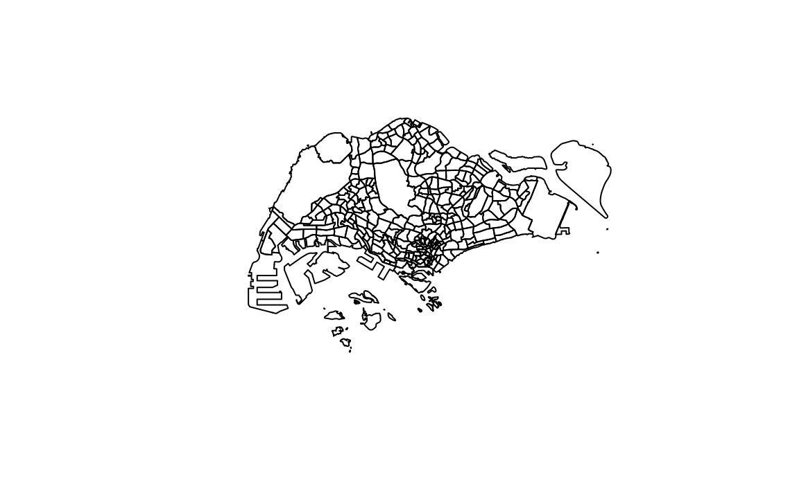
plot(st_geometry(eldercare_services))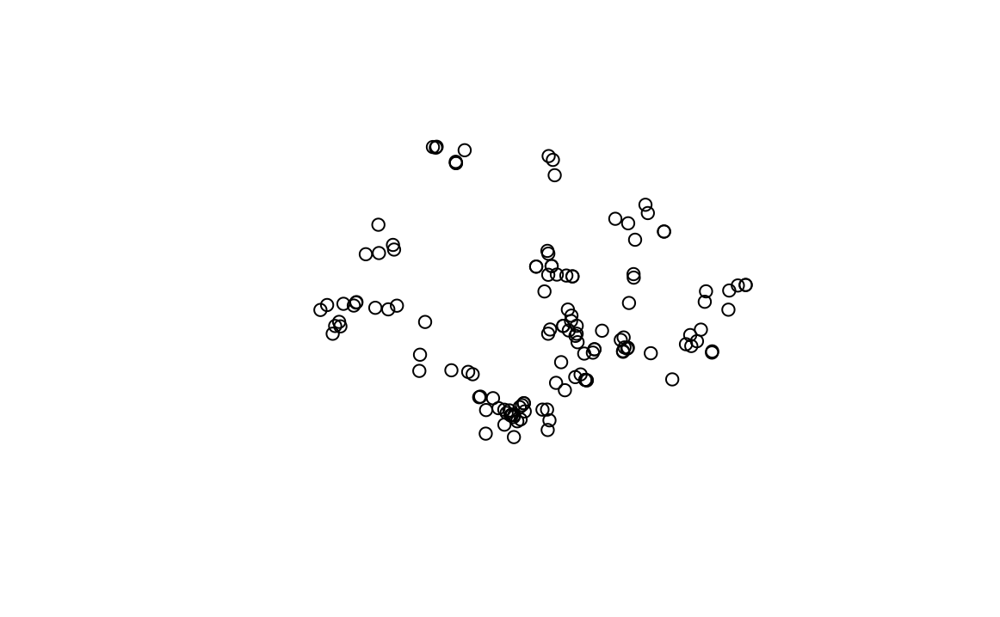
plot(st_geometry(gardensg))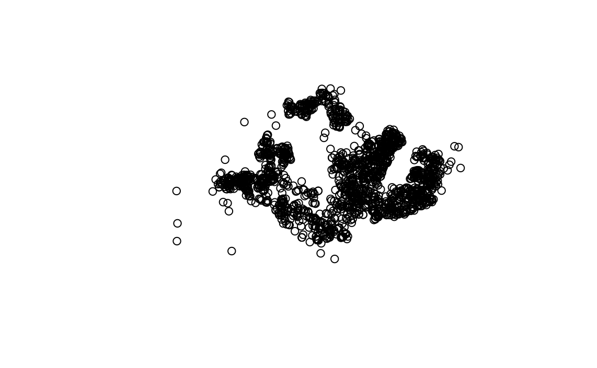
plot(st_geometry(chassg))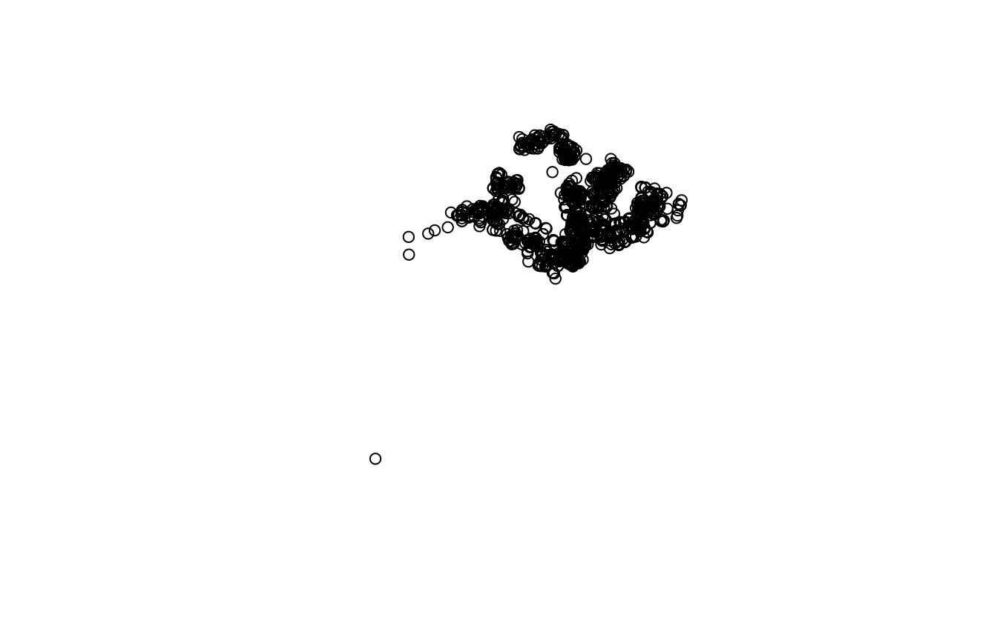
plot(st_geometry(other_amenities))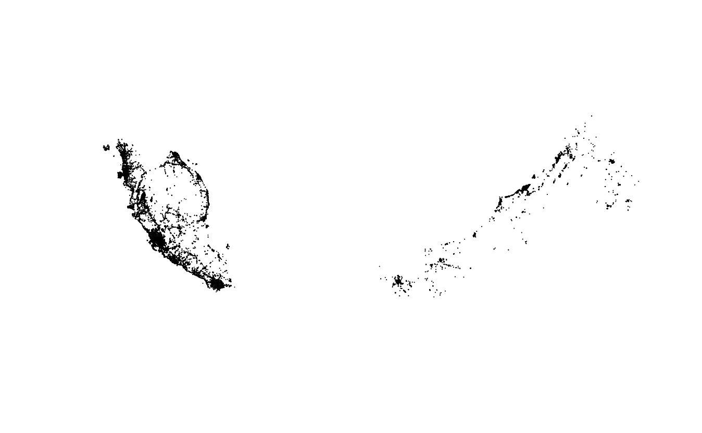
Earlier, we established that mpsz, gardens and chassg contain the Z-dimension.
To remove the Z-dimension which would potentially hinder our analysis, we can use st_zm() from sf package as shown in the codes below.
For mpsz2019,
mpsz <- st_zm(mpsz2019)For gardens,
gardens <- st_zm(gardensg)For chassg,
chas_sg <- st_zm(chassg)To check for invalid geometries, we can apply the following codes.
length(which(st_is_valid(mpsz) == FALSE))[1] 6length(which(st_is_valid(eldercare_services) == FALSE))[1] 0length(which(st_is_valid(gardens) == FALSE))[1] 0length(which(st_is_valid(chas_sg) == FALSE))[1] 0length(which(st_is_valid(other_amenities) == FALSE))[1] 0Among all of the geospatial data, only mpsz has invalid geometries. To resolve the invalid geometry, we use st_make_valid() from sf package as shown in the code below.
mpsz <- st_make_valid(mpsz)Now, let’s check the result.
length(which(st_is_valid(mpsz) == FALSE))[1] 0Nice, all our geospatial data consist of fully valid geometries now!
Here, we can apply the following codes to check for missing values in our data sets.
mpsz[rowSums(is.na(mpsz)) != 0, ]Simple feature collection with 0 features and 2 fields
Bounding box: xmin: NA ymin: NA xmax: NA ymax: NA
Geodetic CRS: WGS 84
[1] Name Description geometry
<0 rows> (or 0-length row.names)eldercare_services[rowSums(is.na(eldercare_services)) != 0, ]Simple feature collection with 133 features and 18 fields
Geometry type: POINT
Dimension: XY
Bounding box: xmin: 14481.92 ymin: 28218.43 xmax: 41665.14 ymax: 46804.9
Projected CRS: SVY21
First 10 features:
OBJECTID ADDRESSBLO ADDRESSBUI ADDRESSPOS
1 1 <NA> <NA> 601318
2 2 <NA> <NA> 462509
3 3 <NA> <NA> 640190
4 4 <NA> <NA> 190005
5 5 <NA> <NA> 160044
6 6 <NA> <NA> 160117
7 7 <NA> <NA> 523499
8 8 <NA> <NA> 731569
9 9 <NA> <NA> 651210
10 10 <NA> <NA> 540182
ADDRESSSTR ADDRESSTYP DESCRIPTIO HYPERLINK
1 318A Jurong East Avenue 1 #02-308 <NA> <NA> <NA>
2 Blk 509B Bedok North Street 3 #02-157 <NA> <NA> <NA>
3 Blk 190 Boon Lay Drive #01-242 <NA> <NA> <NA>
4 5 Beach Rd #02-4943 <NA> <NA> <NA>
5 Blk 44 Beo Crescent #01-67 <NA> <NA> <NA>
6 Blk 117 Jalan Bukit Merah #01-1683 <NA> <NA> <NA>
7 499C Tampines Ave 9 #01-256 <NA> <NA> <NA>
8 569A Champion Way #01-346 <NA> <NA> <NA>
9 210A Bukit Batok St 21 #01-294 <NA> <NA> <NA>
10 Blk 182 Rivervale Crescent\n#01-311 <NA> <NA> <NA>
LANDXADDRE LANDYADDRE
1 0 0
2 0 0
3 0 0
4 0 0
5 0 0
6 0 0
7 0 0
8 0 0
9 0 0
10 0 0
NAME PHOTOURL
1 Yuhua Senior Activity Centre <NA>
2 THK SAC @ Kaki Bukit <NA>
3 THK SAC @ Boon Lay <NA>
4 PEACE-Connect Senior Activity Centre@5 <NA>
5 THK SAC @ Beo Crescent <NA>
6 Silver ACE @ Bukit Merah <NA>
7 Lions Befrienders Senior Activity Centre @ Tampines Blk 499C <NA>
8 Care Corner Senior Activity Centre (WL569) <NA>
9 Fei Yue Senior Activity Centre (Bukit Batok Branch) <NA>
10 COMNET Senior Activity Centre @ 182 Rivervale Crescent <NA>
ADDRESSFLO INC_CRC FMEL_UPD_D ADDRESSUNI X_ADDR Y_ADDR
1 <NA> 2B0DB92FDD914FFC 2016-07-28 <NA> 16614.08 36639.12
2 <NA> 82728FA30612F3FD 2016-07-28 <NA> 38803.81 35098.78
3 <NA> DE7A8D4EA0BD1D9B 2016-07-28 <NA> 14481.92 36357.61
4 <NA> A2C058FC5785F7FE 2016-07-28 <NA> 31505.35 31853.52
5 <NA> 9DBFD51E056AEE70 2016-07-28 <NA> 27218.35 30135.49
6 <NA> 169DABA5B6ECEA87 2016-07-28 <NA> 27278.94 29350.17
7 <NA> 5DB6B9F0BF276F6D 2016-07-28 <NA> 41665.14 37956.92
8 <NA> 4DC6800E9BB385BE 2016-07-28 <NA> 23147.94 45761.17
9 <NA> EFBD712DA5DD6FEC 2016-07-28 <NA> 18820.58 36396.32
10 <NA> 6BB0D7698D7B4C7D 2016-07-28 <NA> 36446.37 41376.90
geometry
1 POINT (16614.08 36639.12)
2 POINT (38803.81 35098.78)
3 POINT (14481.92 36357.61)
4 POINT (31505.35 31853.52)
5 POINT (27218.35 30135.49)
6 POINT (27278.94 29350.17)
7 POINT (41665.14 37956.92)
8 POINT (23147.94 45761.17)
9 POINT (18820.58 36396.32)
10 POINT (36446.37 41376.9)Seems like eldercare_services contain missing values in all rows, likely attributed to certain columns that consist of fully NA values. Let’s focus on checking only the relevant columns, NAME and geometry.
eldercare_services[rowSums(is.na(eldercare_services %>% select(11,19))) != 0, ]Simple feature collection with 0 features and 18 fields
Bounding box: xmin: NA ymin: NA xmax: NA ymax: NA
Projected CRS: SVY21
[1] OBJECTID ADDRESSBLO ADDRESSBUI ADDRESSPOS ADDRESSSTR ADDRESSTYP
[7] DESCRIPTIO HYPERLINK LANDXADDRE LANDYADDRE NAME PHOTOURL
[13] ADDRESSFLO INC_CRC FMEL_UPD_D ADDRESSUNI X_ADDR Y_ADDR
[19] geometry
<0 rows> (or 0-length row.names)Yay, they seem to be alright!
Then, we continue checking the other data sets.
gardens[rowSums(is.na(gardens)) != 0, ]Simple feature collection with 0 features and 2 fields
Bounding box: xmin: NA ymin: NA xmax: NA ymax: NA
Geodetic CRS: WGS 84
[1] Name Description geometry
<0 rows> (or 0-length row.names)chas_sg[rowSums(is.na(chas_sg)) != 0, ]Simple feature collection with 0 features and 2 fields
Bounding box: xmin: NA ymin: NA xmax: NA ymax: NA
Geodetic CRS: WGS 84
[1] Name Description geometry
<0 rows> (or 0-length row.names)other_amenities[rowSums(is.na(other_amenities)) != 0, ]Simple feature collection with 29715 features and 4 fields
Geometry type: MULTIPOLYGON
Dimension: XY
Bounding box: xmin: 99.66072 ymin: 1.013643 xmax: 119.0104 ymax: 7.253331
Geodetic CRS: WGS 84
First 10 features:
osm_id code fclass name geometry
13 20126093 2084 college <NA> MULTIPOLYGON (((101.5421 3....
15 20505251 2204 park <NA> MULTIPOLYGON (((101.5582 3....
16 21281773 2205 playground <NA> MULTIPOLYGON (((101.5577 3....
19 22945204 2306 food_court <NA> MULTIPOLYGON (((101.7946 2....
20 22998331 2256 stadium <NA> MULTIPOLYGON (((101.5466 3....
25 23033750 2204 park <NA> MULTIPOLYGON (((101.5195 3....
28 23036984 2204 park <NA> MULTIPOLYGON (((101.5379 3....
29 23037034 2204 park <NA> MULTIPOLYGON (((101.5467 3....
34 23043243 2204 park <NA> MULTIPOLYGON (((101.507 3.0...
41 23046326 2252 pitch <NA> MULTIPOLYGON (((101.5028 3....Similarly, other_amenities contain NA values in many rows. From the output, we can attribute it to the name column. Let’s exclude the name column in our check:
other_amenities[rowSums(is.na(other_amenities %>% select(-name))) != 0, ]Simple feature collection with 0 features and 4 fields
Bounding box: xmin: NA ymin: NA xmax: NA ymax: NA
Geodetic CRS: WGS 84
[1] osm_id code fclass name geometry
<0 rows> (or 0-length row.names)Excluding the name column, which is not very important for our analysis, we can conclude that there is no other missing values.
We’re done with handling the missing values in our geospatial data!
It is very important to ensure our geospatial data is in the appropriate and common CRS. To check for crs of each data set, we can use st_crs() from sf package.
st_crs(mpsz)Coordinate Reference System:
User input: WGS 84
wkt:
GEOGCRS["WGS 84",
DATUM["World Geodetic System 1984",
ELLIPSOID["WGS 84",6378137,298.257223563,
LENGTHUNIT["metre",1]]],
PRIMEM["Greenwich",0,
ANGLEUNIT["degree",0.0174532925199433]],
CS[ellipsoidal,2],
AXIS["geodetic latitude (Lat)",north,
ORDER[1],
ANGLEUNIT["degree",0.0174532925199433]],
AXIS["geodetic longitude (Lon)",east,
ORDER[2],
ANGLEUNIT["degree",0.0174532925199433]],
ID["EPSG",4326]]The mpsz data set is not in our desired coordinate system (SVY21; EPSG: 3414). Hence, we need to reproject it.
st_crs(eldercare_services)Coordinate Reference System:
User input: SVY21
wkt:
PROJCRS["SVY21",
BASEGEOGCRS["SVY21[WGS84]",
DATUM["World Geodetic System 1984",
ELLIPSOID["WGS 84",6378137,298.257223563,
LENGTHUNIT["metre",1]],
ID["EPSG",6326]],
PRIMEM["Greenwich",0,
ANGLEUNIT["Degree",0.0174532925199433]]],
CONVERSION["unnamed",
METHOD["Transverse Mercator",
ID["EPSG",9807]],
PARAMETER["Latitude of natural origin",1.36666666666667,
ANGLEUNIT["Degree",0.0174532925199433],
ID["EPSG",8801]],
PARAMETER["Longitude of natural origin",103.833333333333,
ANGLEUNIT["Degree",0.0174532925199433],
ID["EPSG",8802]],
PARAMETER["Scale factor at natural origin",1,
SCALEUNIT["unity",1],
ID["EPSG",8805]],
PARAMETER["False easting",28001.642,
LENGTHUNIT["metre",1],
ID["EPSG",8806]],
PARAMETER["False northing",38744.572,
LENGTHUNIT["metre",1],
ID["EPSG",8807]]],
CS[Cartesian,2],
AXIS["(E)",east,
ORDER[1],
LENGTHUNIT["metre",1,
ID["EPSG",9001]]],
AXIS["(N)",north,
ORDER[2],
LENGTHUNIT["metre",1,
ID["EPSG",9001]]]]The eldercare_services data set does not have the correct EPSG code (3414). Hence, we must reassign the EPSG code to it.
st_crs(gardens)Coordinate Reference System:
User input: WGS 84
wkt:
GEOGCRS["WGS 84",
DATUM["World Geodetic System 1984",
ELLIPSOID["WGS 84",6378137,298.257223563,
LENGTHUNIT["metre",1]]],
PRIMEM["Greenwich",0,
ANGLEUNIT["degree",0.0174532925199433]],
CS[ellipsoidal,2],
AXIS["geodetic latitude (Lat)",north,
ORDER[1],
ANGLEUNIT["degree",0.0174532925199433]],
AXIS["geodetic longitude (Lon)",east,
ORDER[2],
ANGLEUNIT["degree",0.0174532925199433]],
ID["EPSG",4326]]st_crs(chas_sg)Coordinate Reference System:
User input: WGS 84
wkt:
GEOGCRS["WGS 84",
DATUM["World Geodetic System 1984",
ELLIPSOID["WGS 84",6378137,298.257223563,
LENGTHUNIT["metre",1]]],
PRIMEM["Greenwich",0,
ANGLEUNIT["degree",0.0174532925199433]],
CS[ellipsoidal,2],
AXIS["geodetic latitude (Lat)",north,
ORDER[1],
ANGLEUNIT["degree",0.0174532925199433]],
AXIS["geodetic longitude (Lon)",east,
ORDER[2],
ANGLEUNIT["degree",0.0174532925199433]],
ID["EPSG",4326]]st_crs(other_amenities)Coordinate Reference System:
User input: WGS 84
wkt:
GEOGCRS["WGS 84",
DATUM["World Geodetic System 1984",
ELLIPSOID["WGS 84",6378137,298.257223563,
LENGTHUNIT["metre",1]]],
PRIMEM["Greenwich",0,
ANGLEUNIT["degree",0.0174532925199433]],
CS[ellipsoidal,2],
AXIS["latitude",north,
ORDER[1],
ANGLEUNIT["degree",0.0174532925199433]],
AXIS["longitude",east,
ORDER[2],
ANGLEUNIT["degree",0.0174532925199433]],
ID["EPSG",4326]]The garden, chas_sg and other_amenities data sets are also not in our desired coordinate system (SVY21; EPSG: 3414). Hence, we need to reproject them too.
To reproject data sets from one CRS to another CRS, we apply st_transform() from sf package as shown in the following three code chunks.
mpszsg <- st_transform(mpsz, 3414)garden <- st_transform(gardens, 3414)chas <- st_transform(chas_sg, 3414)others <- st_transform(other_amenities, 3414)For eldercare_services, we should assign the correct EPSG code using st_set_crs() from sf package instead.
eldercare <- st_set_crs(eldercare_services, 3414)Currently, our mpsz_sg data is pretty messy. The subzone and planning area names are hidden in the Description field. To extract them, we should follow the codes below.
For subzone:
mpszsg <- mpszsg %>%
rowwise() %>%
mutate(SUBZONE= str_extract(`Description`, "<th>SUBZONE_N</th> <td>(.*?)</td>")) %>% ungroup()mpszsg$SUBZONE <- str_remove_all(mpszsg$SUBZONE, "<.*?>|SUBZONE_N")mpszsg$SUBZONE <- str_remove(mpszsg$SUBZONE, "^\\s+")For planning area:
mpszsg <- mpszsg %>%
rowwise() %>%
mutate(PLAN_AREA= str_extract(`Description`, "<th>PLN_AREA_N</th> <td>(.*?)</td>")) %>% ungroup()mpszsg$PLAN_AREA <- str_remove_all(mpszsg$PLAN_AREA, "<.*?>|PLN_AREA_N")mpszsg$PLAN_AREA <- str_remove(mpszsg$PLAN_AREA, "^\\s+")head(mpszsg, 10)Simple feature collection with 10 features and 4 fields
Geometry type: MULTIPOLYGON
Dimension: XY
Bounding box: xmin: 24431.8 ymin: 28515.07 xmax: 31146.33 ymax: 30069.41
Projected CRS: SVY21 / Singapore TM
# A tibble: 10 × 5
Name Description geometry SUBZONE PLAN_AREA
<chr> <chr> <MULTIPOLYGON [m]> <chr> <chr>
1 kml_1 "<center><table><tr><th c… (((25910.34 29425.34, 26… DEPOT … BUKIT ME…
2 kml_2 "<center><table><tr><th c… (((26750.09 29216.1, 267… BUKIT … BUKIT ME…
3 kml_3 "<center><table><tr><th c… (((29161.2 29723.07, 291… CHINAT… OUTRAM
4 kml_4 "<center><table><tr><th c… (((29814.11 29616.89, 29… PHILLIP DOWNTOWN…
5 kml_5 "<center><table><tr><th c… (((30137.77 29843.19, 30… RAFFLE… DOWNTOWN…
6 kml_6 "<center><table><tr><th c… (((29699.44 29417.6, 296… CHINA … OUTRAM
7 kml_7 "<center><table><tr><th c… (((27748.04 29953.49, 27… TIONG … BUKIT ME…
8 kml_8 "<center><table><tr><th c… (((30844.87 29021.96, 30… BAYFRO… DOWNTOWN…
9 kml_9 "<center><table><tr><th c… (((27444.04 29961.41, 27… TIONG … BUKIT ME…
10 kml_10 "<center><table><tr><th c… (((30436.73 29517.49, 30… CLIFFO… DOWNTOWN…Similarly, the chas data set has the clinic names hidden in the Description field. We apply the same steps as shown below to extract the clinic names.
chas <- chas %>%
rowwise() %>%
mutate(NAME= str_extract(`Description`, "<th>HCI_NAME</th> <td>(.*?)</td>")) %>% ungroup()chas$NAME <- str_remove_all(chas$NAME, "<.*?>|HCI_NAME|")chas$NAME <- str_remove_all(chas$NAME, "^\\s+")To simplify our analysis and speed up our computation, we should only retain relevant fields in our data sets. Hence, we use select() from dplyr package to select the fields that we want to keep.
mpsz:
mpszsg <- mpszsg %>% select(3:5)eldercare:
eldercare <- eldercare %>% select(11,19)eldercareSimple feature collection with 133 features and 1 field
Geometry type: POINT
Dimension: XY
Bounding box: xmin: 14481.92 ymin: 28218.43 xmax: 41665.14 ymax: 46804.9
Projected CRS: SVY21 / Singapore TM
First 10 features:
NAME
1 Yuhua Senior Activity Centre
2 THK SAC @ Kaki Bukit
3 THK SAC @ Boon Lay
4 PEACE-Connect Senior Activity Centre@5
5 THK SAC @ Beo Crescent
6 Silver ACE @ Bukit Merah
7 Lions Befrienders Senior Activity Centre @ Tampines Blk 499C
8 Care Corner Senior Activity Centre (WL569)
9 Fei Yue Senior Activity Centre (Bukit Batok Branch)
10 COMNET Senior Activity Centre @ 182 Rivervale Crescent
geometry
1 POINT (16614.08 36639.12)
2 POINT (38803.81 35098.78)
3 POINT (14481.92 36357.61)
4 POINT (31505.35 31853.52)
5 POINT (27218.35 30135.49)
6 POINT (27278.94 29350.17)
7 POINT (41665.14 37956.92)
8 POINT (23147.94 45761.17)
9 POINT (18820.58 36396.32)
10 POINT (36446.37 41376.9)chas:
chas <- chas %>% select(3,4)chasSimple feature collection with 645 features and 1 field
Geometry type: POINT
Dimension: XY
Bounding box: xmin: 11234.32 ymin: 27388.9 xmax: 45333 ymax: 48380.51
Projected CRS: SVY21 / Singapore TM
# A tibble: 645 × 2
geometry NAME
<POINT [m]> <chr>
1 (32176.99 37348.35) Affinity Medical Clinic
2 (39037.12 34234.33) BEDOK CENTRAL CLINIC
3 (39378.86 33601.1) BEDOK CLINIC & SURGERY(Family Medical Centre)
4 (22295.64 46626.1) ACUMED MEDICAL GROUP
5 (27353.89 30162.99) Beo Crescent Clinic & Surgery
6 (33064.94 35041.76) G.I.F.T MEDICAL CENTRE
7 (34620.42 42646.27) DR JOYCE & PARTNERS FAMILY CLINIC
8 (29101.85 33647.61) DR LIM LEAN HUAT & ASSOCIATES PTE LTD
9 (28449.68 31527.59) DTAP @ Somerset
10 (25843.11 47551.7) DUXTON MEDICAL CLINIC CANBERRA
# ℹ 635 more rowsLet’s take a look at our mpszsg data set.
plot(st_geometry(mpszsg))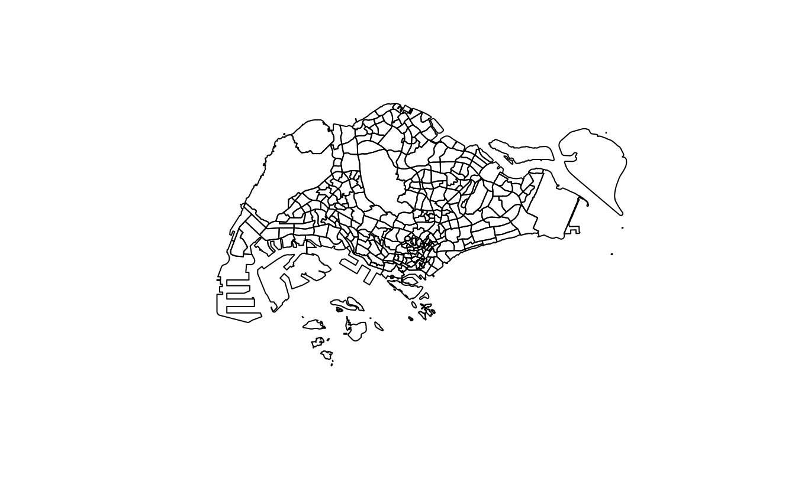
From the above, we can see that the data set contains geometries of the outer islands of Singapore. In our research, however, we do not need these data as we are focusing on the main island of Singapore.
Hence, to see which what kind of islands there are contained in the data set, we can take a look at what plan areas there are using unique().
unique(mpszsg$PLAN_AREA) [1] "BUKIT MERAH" "OUTRAM"
[3] "DOWNTOWN CORE" "MARINA SOUTH"
[5] "MARINA EAST" "RIVER VALLEY"
[7] "SINGAPORE RIVER" "WESTERN ISLANDS"
[9] "MUSEUM" "QUEENSTOWN"
[11] "MARINE PARADE" "SOUTHERN ISLANDS"
[13] "STRAITS VIEW" "ROCHOR"
[15] "TANGLIN" "NEWTON"
[17] "CLEMENTI" "BEDOK"
[19] "PIONEER" "JURONG EAST"
[21] "KALLANG" "ORCHARD"
[23] "GEYLANG" "TOA PAYOH"
[25] "BUKIT TIMAH" "TUAS"
[27] "JURONG WEST" "ANG MO KIO"
[29] "SERANGOON" "TENGAH"
[31] "BOON LAY" "NOVENA"
[33] "TAMPINES" "HOUGANG"
[35] "CHANGI BAY" "PAYA LEBAR"
[37] "BUKIT BATOK" "PASIR RIS"
[39] "BUKIT PANJANG" "CHOA CHU KANG"
[41] "BISHAN" "YISHUN"
[43] "PUNGGOL" "MANDAI"
[45] "CHANGI" "SENGKANG"
[47] "SELETAR" "SUNGEI KADUT"
[49] "WOODLANDS" "SEMBAWANG"
[51] "WESTERN WATER CATCHMENT" "CENTRAL WATER CATCHMENT"
[53] "SIMPANG" "LIM CHU KANG"
[55] "NORTH-EASTERN ISLANDS" From here, we can see that the outer islands are classified as ” NORTH-EASTERN ISLANDS”, ” WESTERN ISLANDS”, ” SOUTHERN ISLANDS” under PLAN_AREA. All other plan areas are in or connected to the main island of Singapore.
To remove these islands from our data set, we can use filter() from the dplyr package and apply the following code chunk, removing records that contain the string “ISLANDS” in the PLAN_AREA column.
mpsz_sf <- mpszsg %>% filter(!str_detect(PLAN_AREA, "ISLANDS"))plot(st_geometry(mpsz_sf))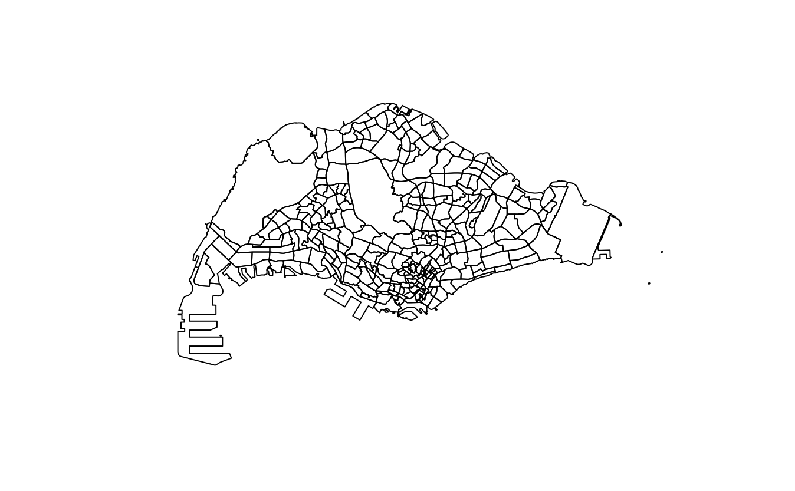
Then, to get the boundaries of Singapore main island,
sgboundary_sf <- mpsz_sf %>% st_unionplot(st_geometry(sgboundary_sf))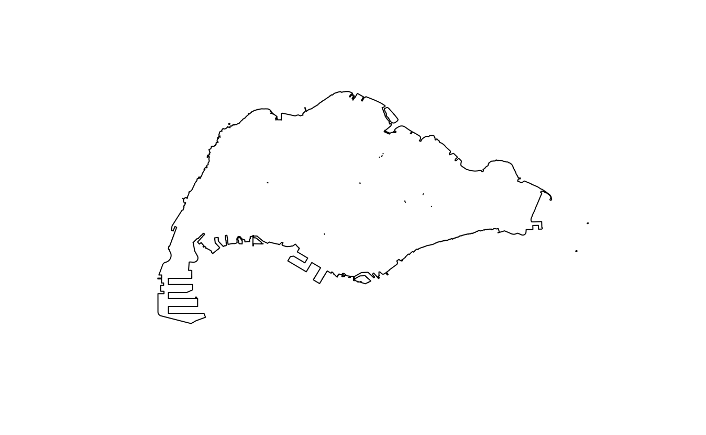
From our understanding, chas data set contains one data point at one of Singapore’s outer islands. Hence, we want to extract rows that contain only data within Singapore main island. To do so, we use the following code.
chas <- chas[unlist(st_contains(sgboundary_sf, chas)),]Let’s take a look at our extracted chas data.
plot(st_geometry(chas))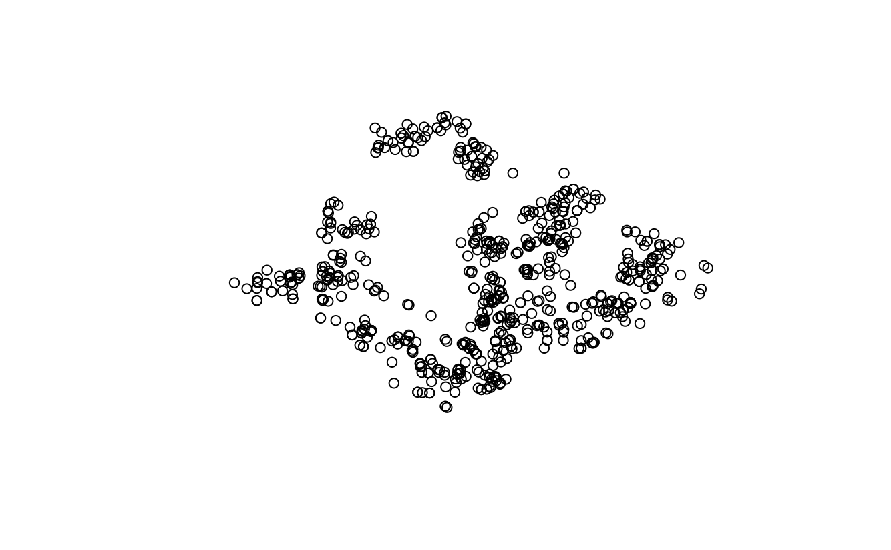
From our understanding, others data set contains the data of other neighbouring countries and islands outside of Singapore main island. Hence, we want to extract rows that contain only data within Singapore main island. To do so, we use the following code.
amenities <- others[unlist(st_contains(sgboundary_sf, others)),]Here, we check whether we have achieved our desired result for amenities.
plot(st_geometry(amenities))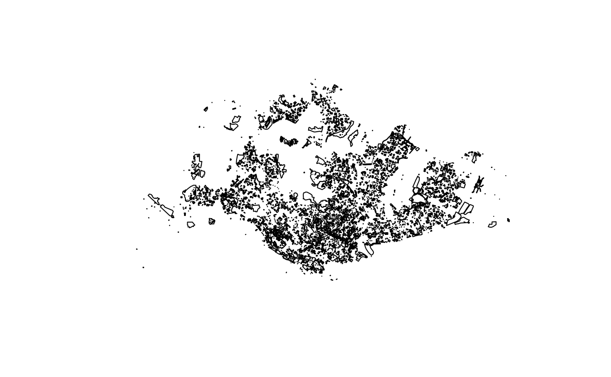
We’ve successfully extracted them!
To confirm that all records in our eldercare and garden data sets are within the boundaries of Singapore main island, we can apply the following code.
eldercare[!unlist(st_contains(sgboundary_sf, eldercare)),]Simple feature collection with 0 features and 1 field
Bounding box: xmin: NA ymin: NA xmax: NA ymax: NA
Projected CRS: SVY21 / Singapore TM
[1] NAME geometry
<0 rows> (or 0-length row.names)garden[!unlist(st_contains(sgboundary_sf, garden)),]Simple feature collection with 0 features and 2 fields
Bounding box: xmin: NA ymin: NA xmax: NA ymax: NA
Projected CRS: SVY21 / Singapore TM
[1] Name Description geometry
<0 rows> (or 0-length row.names)In the above codes, we are checking for eldercare and garden records that are not contained by sgboundary_sf.
Since the results return 0 row for both data sets, we are certain these data sets are confined to within Singapore’s main island.
The amenities data set consists of different types of amenities recorded in different rows. To extract each of them (hospital, community centres, parks), we apply the codes below.
Hospital:
hospital <- amenities %>% filter(fclass == "hospital")Community Centre:
communitycentre <- amenities %>% filter(fclass == "community_centre")Park:
park <- amenities %>% filter(fclass == "park")For our accessibility analysis, we would need the capacity (supply) of each facility.
For eldercare, we use an estimated capacity of 100, implying that each eldercare centre can hold 100 elderly people at any point of time.
eldercare <- eldercare %>% mutate(capacity = 100)Community gardens are not very big, occupying a small land space within estates. Hence, we use an estimated capacity of 15, implying that each community garden can hold 25 elderly people at any point of time.
garden <- garden %>% mutate(capacity = 25)Most general practitioner clinics in Singapore are also small in scale. Hence, we assume that each of them can hold 15 elderly people each time.
chas <- chas %>% mutate(capacity=15)Hospitals in Singapore has varying capacity. Based on various articles, such as this, we estimate that each hospital can hold about 1000 elderly people at any point of time.
hospital <- hospital %>% mutate(capacity=1000)Community centres occupy a significant land area, holding many activities for the entire neighbourhood. Hence, we estimate that it can hold about 1000 elderly at any point in time.
communitycentre <- communitycentre %>% mutate(capacity = 1000)Most parks in Singapore are quite big and can hold approximately 500 elderly at any point in time.
park <- park %>% mutate(capacity = 500)The first step to dealing with our aspatial data is to import it into our R environment. To do so, we can use read_csv() from the readr package.
residents <- read.csv("data/respopagesextod2023.csv")We take a look at the residents data.
glimpse(residents)Rows: 100,928
Columns: 7
$ PA <chr> "Ang Mo Kio", "Ang Mo Kio", "Ang Mo Kio", "Ang Mo Kio", "Ang Mo K…
$ SZ <chr> "Ang Mo Kio Town Centre", "Ang Mo Kio Town Centre", "Ang Mo Kio T…
$ AG <chr> "0_to_4", "0_to_4", "0_to_4", "0_to_4", "0_to_4", "0_to_4", "0_to…
$ Sex <chr> "Males", "Males", "Males", "Males", "Males", "Males", "Males", "M…
$ TOD <chr> "HDB 1- and 2-Room Flats", "HDB 3-Room Flats", "HDB 4-Room Flats"…
$ Pop <int> 0, 0, 10, 30, 0, 40, 0, 0, 0, 0, 10, 20, 0, 20, 0, 0, 0, 10, 10, …
$ Time <int> 2023, 2023, 2023, 2023, 2023, 2023, 2023, 2023, 2023, 2023, 2023,…Since the data has an AG (age) field broken down into several age groups, let’s take a look at how many unique age group classifications there are using the following code.
unique(residents$AG) [1] "0_to_4" "5_to_9" "10_to_14" "15_to_19" "20_to_24"
[6] "25_to_29" "30_to_34" "35_to_39" "40_to_44" "45_to_49"
[11] "50_to_54" "55_to_59" "60_to_64" "65_to_69" "70_to_74"
[16] "75_to_79" "80_to_84" "85_to_89" "90_and_Over"Then, to extract only rows that contain residents aged 55 and above, and name this new data set as elderly, we can apply the following code.
elderly <- residents %>% filter(AG %in% c("55_to_59", "60_to_64", "65_to_69", "70_to_74", "75_to_79", "80_to_84", "85_to_89", "90_and_Over"))Next, to summarize the number of population size of elderly according to Planning Area and Subzone, we can apply the following code.
elderly <- elderly %>% group_by(PA, SZ) %>% summarise(sum(Pop))Then, we rename the population size column “sum(Pop)” as ‘demand’. This represents the demand for elderly-related services in each planning area and subzone.
elderly <- elderly %>% rename(demand = `sum(Pop)`)elderly# A tibble: 332 × 3
# Groups: PA [55]
PA SZ demand
<chr> <chr> <int>
1 Ang Mo Kio Ang Mo Kio Town Centre 1520
2 Ang Mo Kio Cheng San 10710
3 Ang Mo Kio Chong Boon 11100
4 Ang Mo Kio Kebun Bahru 9080
5 Ang Mo Kio Sembawang Hills 2450
6 Ang Mo Kio Shangri-La 7020
7 Ang Mo Kio Tagore 3070
8 Ang Mo Kio Townsville 8370
9 Ang Mo Kio Yio Chu Kang 0
10 Ang Mo Kio Yio Chu Kang East 1490
# ℹ 322 more rowsIt’s time to combine the geospatial and aspatial data, using subzone and planning area names.
mpsz_sfSimple feature collection with 326 features and 2 fields
Geometry type: MULTIPOLYGON
Dimension: XY
Bounding box: xmin: 2667.538 ymin: 21448.47 xmax: 55941.94 ymax: 50256.33
Projected CRS: SVY21 / Singapore TM
# A tibble: 326 × 3
geometry SUBZONE PLAN_AREA
* <MULTIPOLYGON [m]> <chr> <chr>
1 (((25910.34 29425.34, 26265.82 29209.49, 26238.95 29165.57… DEPOT … BUKIT ME…
2 (((26750.09 29216.1, 26751.91 29173.68, 26762.63 29174.04,… BUKIT … BUKIT ME…
3 (((29161.2 29723.07, 29189.03 29704.77, 29209.22 29691.86,… CHINAT… OUTRAM
4 (((29814.11 29616.89, 29806.68 29593.55, 29786.43 29615.23… PHILLIP DOWNTOWN…
5 (((30137.77 29843.19, 30138.42 29841.86, 30160.07 29797.29… RAFFLE… DOWNTOWN…
6 (((29699.44 29417.6, 29692.13 29405.75, 29690.85 29406.46,… CHINA … OUTRAM
7 (((27748.04 29953.49, 27826.68 29943.78, 27840.27 29944.76… TIONG … BUKIT ME…
8 (((30844.87 29021.96, 30794.28 28944.99, 30649.08 29034.1,… BAYFRO… DOWNTOWN…
9 (((27444.04 29961.41, 27446.8 29808.05, 27566.69 29810.9, … TIONG … BUKIT ME…
10 (((30436.73 29517.49, 30304.36 29415.54, 30214.96 29420.38… CLIFFO… DOWNTOWN…
# ℹ 316 more rowselderly# A tibble: 332 × 3
# Groups: PA [55]
PA SZ demand
<chr> <chr> <int>
1 Ang Mo Kio Ang Mo Kio Town Centre 1520
2 Ang Mo Kio Cheng San 10710
3 Ang Mo Kio Chong Boon 11100
4 Ang Mo Kio Kebun Bahru 9080
5 Ang Mo Kio Sembawang Hills 2450
6 Ang Mo Kio Shangri-La 7020
7 Ang Mo Kio Tagore 3070
8 Ang Mo Kio Townsville 8370
9 Ang Mo Kio Yio Chu Kang 0
10 Ang Mo Kio Yio Chu Kang East 1490
# ℹ 322 more rowsFrom the above, we see that the subzone and planning area values in elderly data set are not in full uppercase, while that in mpsz_sf data set is in full uppercase. Since R is case sensitive, this would hinder our join.
Hence, we can change the values in elderly data set to full uppercase, so that it can match with the values in mpsz_sf. To do so, we can use toupper() as shown below.
elderly$PA <- toupper(elderly$PA)elderly$SZ <- toupper(elderly$SZ)Now that we have changed the values to uppercase, we can use left_join() from dplyr package to conduct our join, using subzone and planning area values.
mpsz_demand <- left_join(mpsz_sf, elderly, by = c('SUBZONE' = 'SZ', 'PLAN_AREA' = 'PA'))mpsz_demandSimple feature collection with 326 features and 3 fields
Geometry type: MULTIPOLYGON
Dimension: XY
Bounding box: xmin: 2667.538 ymin: 21448.47 xmax: 55941.94 ymax: 50256.33
Projected CRS: SVY21 / Singapore TM
# A tibble: 326 × 4
geometry SUBZONE PLAN_AREA demand
<MULTIPOLYGON [m]> <chr> <chr> <int>
1 (((25910.34 29425.34, 26265.82 29209.49, 26238.95 2… DEPOT … BUKIT ME… 1870
2 (((26750.09 29216.1, 26751.91 29173.68, 26762.63 29… BUKIT … BUKIT ME… 460
3 (((29161.2 29723.07, 29189.03 29704.77, 29209.22 29… CHINAT… OUTRAM 3590
4 (((29814.11 29616.89, 29806.68 29593.55, 29786.43 2… PHILLIP DOWNTOWN… 0
5 (((30137.77 29843.19, 30138.42 29841.86, 30160.07 2… RAFFLE… DOWNTOWN… 0
6 (((29699.44 29417.6, 29692.13 29405.75, 29690.85 29… CHINA … OUTRAM 680
7 (((27748.04 29953.49, 27826.68 29943.78, 27840.27 2… TIONG … BUKIT ME… 4090
8 (((30844.87 29021.96, 30794.28 28944.99, 30649.08 2… BAYFRO… DOWNTOWN… 0
9 (((27444.04 29961.41, 27446.8 29808.05, 27566.69 29… TIONG … BUKIT ME… 5140
10 (((30436.73 29517.49, 30304.36 29415.54, 30214.96 2… CLIFFO… DOWNTOWN… 0
# ℹ 316 more rowsWe’ve successfully combined our data! Now, we can easily map the demand of each region geometrically for analysis later.
Accessibility analysis can be done with hexagon data as individual subzones might be too large. In this section, we will create hexagon data.
To make a hexagon object, we use st_make_grid() from sf package.
hexagons <- st_make_grid(mpsz_sf, cellsize = 250, what = "polygons", square = FALSE)In the above code, we set
cellsize = 250, such that distance between opposite edges is 250m
what = “polygons” to create polygons
square = FALSE to create hexagonal grid instead of square grid
plot(st_geometry(hexagons))To get the hexagon of Singapore main island,
hexagon <- hexagons %>% st_intersection(mpsz_sf)plot(st_geometry(hexagon))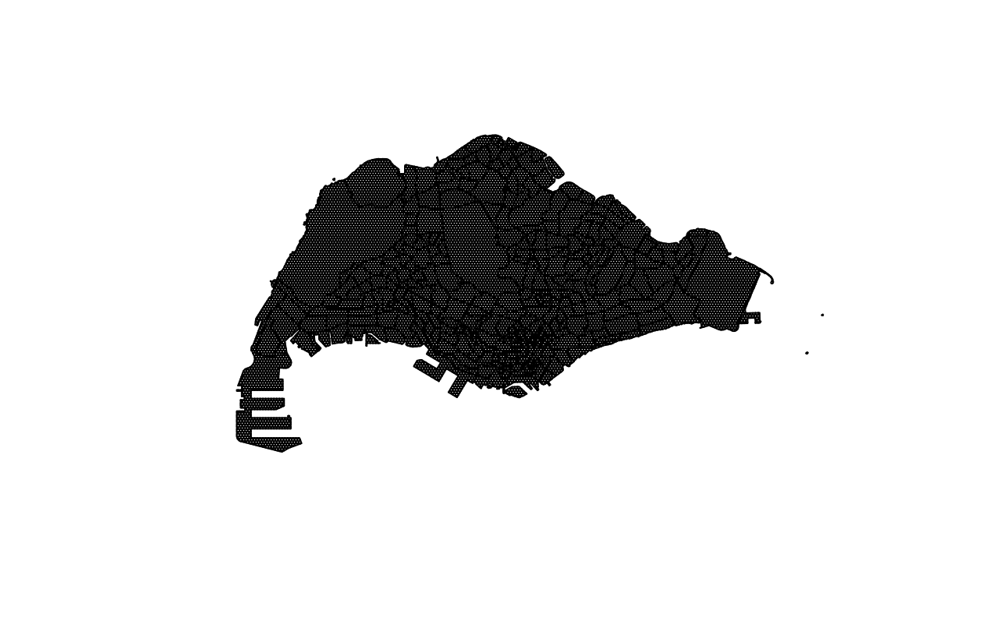
Step 1: Converting hexagon into sf object
We can use glimpse() to gain an understanding of the structure of hexagon.
glimpse(hexagon)sfc_GEOMETRY of length 17370; first list element: List of 1
$ : num [1:7, 1:2] 24535 24534 24533 24514 24506 ...
- attr(*, "class")= chr [1:3] "XY" "POLYGON" "sfg"Alternatively, we can use class() to determine the object class of hexagon.
class(hexagon)[1] "sfc_GEOMETRY" "sfc" From the results, we see that hexagon is in sfc class. To convert it into an sf object for easier manipulation, we can use st_sf() from sf as shown in the following code, and name the new sf object as hexagon_sf.
hexagon_sf <- hexagon %>% st_sf()head(hexagon_sf,10)Simple feature collection with 10 features and 0 fields
Geometry type: POLYGON
Dimension: XY
Bounding box: xmin: 24431.8 ymin: 29242.98 xmax: 25292.54 ymax: 29615.08
Projected CRS: SVY21 / Singapore TM
geometry
1 POLYGON ((24535.05 29319.2,...
2 POLYGON ((24542.54 29603.55...
3 POLYGON ((24500.44 29339.18...
4 POLYGON ((24667.54 29387.04...
5 POLYGON ((24542.54 29603.55...
6 POLYGON ((24667.54 29387.04...
7 POLYGON ((24917.54 29387.04...
8 POLYGON ((24812.04 29592.29...
9 POLYGON ((24917.54 29387.04...
10 POLYGON ((25167.54 29387.04...Step 2: Inserting planning area and subzone names
Here, we use st_join() and st_overlaps() from sf package to combine the aggregated demand for each subzone into the hexagon_sf data frame.
hex <- st_join(hexagon_sf, mpsz_demand, st_overlaps)st_overlaps() allows us to join mpsz_demand to hexagon_sf as long as there is an area of overlap, including cases where geometries share boundaries or overlap partially.
Since many hexagons can make up a single subzone, and the current demand field in the hexagon_demand represents the demand for one entire subzone, we have to divide the aggregated demand across the different hexagons in each subzone.
To do so, we first find out the count of hexagons contained in each subzone by using the following code.
hex_count <- st_drop_geometry(hex) %>% count(SUBZONE)Then, we use left_join() from dplyr to include the total number of hexagons sharing the same subzone as the hexagon of that row.
hex_demand_sf <- left_join(hex, hex_count)hex_demand_sfSimple feature collection with 24023 features and 4 fields
Geometry type: GEOMETRY
Dimension: XY
Bounding box: xmin: 2667.538 ymin: 21448.47 xmax: 55941.94 ymax: 50256.33
Projected CRS: SVY21 / Singapore TM
First 10 features:
SUBZONE PLAN_AREA demand n geometry
1 DEPOT ROAD BUKIT MERAH 1870 34 POLYGON ((24535.05 29319.2,...
2 KENT RIDGE QUEENSTOWN 0 56 POLYGON ((24535.05 29319.2,...
3 DEPOT ROAD BUKIT MERAH 1870 34 POLYGON ((24542.54 29603.55...
4 KENT RIDGE QUEENSTOWN 0 56 POLYGON ((24542.54 29603.55...
5 DEPOT ROAD BUKIT MERAH 1870 34 POLYGON ((24500.44 29339.18...
6 KENT RIDGE QUEENSTOWN 0 56 POLYGON ((24500.44 29339.18...
7 DEPOT ROAD BUKIT MERAH 1870 34 POLYGON ((24667.54 29387.04...
8 TELOK BLANGAH DRIVE BUKIT MERAH 6500 44 POLYGON ((24667.54 29387.04...
9 DEPOT ROAD BUKIT MERAH 1870 34 POLYGON ((24542.54 29603.55...
10 ALEXANDRA HILL BUKIT MERAH 5790 38 POLYGON ((24542.54 29603.55...Next, we divide the aggregated demand by the number of hexagons sharing the same subzone. The new field, hexagon_demand, indicates the average demand of the particular hexagon.
hex_sf <- hex_demand_sf %>% mutate(hexagon_demand = ceiling(demand/n))We need the distance matrix between the residential areas (reflected in mpsz_demand) and each facility to determine the accessibility to the latter.
To do so, we have to apply the steps in the following sections.
We can use data in sf format to prepare distance matrix. However, there has been empirical evidence that it is too computationally intensive, and that sp format is a better choice computationally. Hence, we convert our sf data sets into sp objects.
hex_sp <- as(hex_sf, "Spatial")hex_spclass : SpatialPolygonsDataFrame
features : 24023
extent : 2667.538, 55941.94, 21448.47, 50256.33 (xmin, xmax, ymin, ymax)
crs : +proj=tmerc +lat_0=1.36666666666667 +lon_0=103.833333333333 +k=1 +x_0=28001.642 +y_0=38744.572 +ellps=WGS84 +towgs84=0,0,0,0,0,0,0 +units=m +no_defs
variables : 5
names : SUBZONE, PLAN_AREA, demand, n, hexagon_demand
min values : ADMIRALTY, ANG MO KIO, 0, 9, 0
max values : YUNNAN, YISHUN, 45870, 10336, 638 eldercare_sp <- as(eldercare, "Spatial")eldercare_spclass : SpatialPointsDataFrame
features : 133
extent : 14481.92, 41665.14, 28218.43, 46804.9 (xmin, xmax, ymin, ymax)
crs : +proj=tmerc +lat_0=1.36666666666667 +lon_0=103.833333333333 +k=1 +x_0=28001.642 +y_0=38744.572 +ellps=WGS84 +towgs84=0,0,0,0,0,0,0 +units=m +no_defs
variables : 2
names : NAME, capacity
min values : Abdullah Shooker Jewish Welfare Home, 100
max values : Zion Home For The Aged, 100 garden_sp <- as(garden, "Spatial")chas_sp <- as(chas, "Spatial")hospital_sp <- as(hospital, "Spatial")communitycentre_sp <- as(communitycentre, "Spatial")park_sp <- as(park, "Spatial")Next, we use spDists from sp to compute the distance matrix from each hexagon in hex_sp to each location in every facility data set, as shown below.
eldercare_dist_matrix <- spDists(hex_sp, eldercare_sp, longlat = FALSE)We put the longlat argument as FALSE as our data set geometries are not in longlat format.
To have an understanding of how the distance looks like, we can apply the following code to see the first 10 rows and columns of eldercare_dist_matrix.
head(eldercare_dist_matrix, n = c(5,5)) [,1] [,2] [,3] [,4] [,5]
[1,] 10768.59 15410.50 12254.27 7432.783 2821.313
[2,] 10768.59 15410.50 12254.27 7432.783 2821.313
[3,] 10566.90 15343.01 12077.96 7377.224 2788.049
[4,] 10566.90 15343.01 12077.96 7377.224 2788.049
[5,] 10702.29 15323.17 12205.93 7350.292 2747.318Then, we repeat the same steps for all other facilities in section 3.1.2.2 to 3.1.3.4.
garden_dist_matrix <- spDists(hex_sp, garden_sp, longlat = FALSE)chas_dist_matrix <- spDists(hex_sp, chas_sp, longlat = FALSE)Hospitals:
hospital_dist_matrix <- spDists(hex_sp, hospital_sp, longlat = FALSE)Community Centres:
communitycentre_dist_matrix <- spDists(hex_sp, communitycentre_sp, longlat = FALSE)Parks:
park_dist_matrix <- spDists(hex_sp, park_sp, longlat = FALSE)Right now, our matrices do not have column and row headers, which can make it difficult to trace the hexagons and facilities when we look at them.
Hence, we use the codes below to extract the names of each data set.
Then, we insert the names into the matrices accordingly.
Since our distance matrix values are currently in metres (as we used the SVY21 CRS), the unit system is a bit too small. We can convert their units to to kilometres using the code chunk below.
eldercare_distmat_km <- as.matrix(eldercare_dist_matrix/1000)
garden_distmat_km <- as.matrix(garden_dist_matrix/1000)
chas_distmat_km <- as.matrix(chas_dist_matrix/1000)
hospital_distmat_km <- as.matrix(hospital_dist_matrix/1000)
communitycentre_distmat_km <- as.matrix(communitycentre_dist_matrix/1000)
park_distmat_km <- as.matrix(park_dist_matrix/1000)Let’s take a look at the first 3 rows and columns of the eldercare_distmat_km matrix to have a rough idea of how it looks like.
head(eldercare_distmat_km, 3, 3) Yuhua Senior Activity Centre THK SAC @ Kaki Bukit THK SAC @ Boon Lay
DEPOT ROAD 10.76859 15.41050 12.25427
KENT RIDGE 10.76859 15.41050 12.25427
DEPOT ROAD 10.56690 15.34301 12.07796
PEACE-Connect Senior Activity Centre@5 THK SAC @ Beo Crescent
DEPOT ROAD 7.432783 2.821313
KENT RIDGE 7.432783 2.821313
DEPOT ROAD 7.377224 2.788049
Silver ACE @ Bukit Merah
DEPOT ROAD 2.762694
KENT RIDGE 2.762694
DEPOT ROAD 2.804518
Lions Befrienders Senior Activity Centre @ Tampines Blk 499C
DEPOT ROAD 19.19933
KENT RIDGE 19.19933
DEPOT ROAD 19.11042
Care Corner Senior Activity Centre (WL569)
DEPOT ROAD 16.49441
KENT RIDGE 16.49441
DEPOT ROAD 16.22810
Fei Yue Senior Activity Centre (Bukit Batok Branch)
DEPOT ROAD 9.081028
KENT RIDGE 9.081028
DEPOT ROAD 8.856112
COMNET Senior Activity Centre @ 182 Rivervale Crescent
DEPOT ROAD 16.95896
KENT RIDGE 16.95896
DEPOT ROAD 16.79460
Abdullah Shooker Jewish Welfare Home Adventist Home For The Elders
DEPOT ROAD 5.557858 8.258787
KENT RIDGE 5.557858 8.258787
DEPOT ROAD 5.479791 8.113761
AWWA Community Home for Senior Citizens Bo Tien Home For The Aged
DEPOT ROAD 10.92968 10.76771
KENT RIDGE 10.92968 10.76771
DEPOT ROAD 10.70610 10.60702
Evergreen Place, Home @Hong San Geylang East Home For The Aged
DEPOT ROAD 12.39381 10.29883
KENT RIDGE 12.39381 10.29883
DEPOT ROAD 12.15017 10.21758
Henderson Senior Citizens' Home Kheng Chiu Loke Tin Kee Home
DEPOT ROAD 2.221623 18.10114
KENT RIDGE 2.221623 18.10114
DEPOT ROAD 2.231153 18.01019
PERTAPIS Senior Citizens Fellowship Home SBWS Happy Villa (Females)
DEPOT ROAD 8.978544 4.540208
KENT RIDGE 8.978544 4.540208
DEPOT ROAD 8.805637 4.616720
Singapore Baptist Convention Golden Age Home
DEPOT ROAD 8.543230
KENT RIDGE 8.543230
DEPOT ROAD 8.441053
St Andrew's Cathedral Home For The Aged St John's Home for the Aged
DEPOT ROAD 5.553162 9.799429
KENT RIDGE 5.553162 9.799429
DEPOT ROAD 5.335628 9.674079
Jia Ying Senior Activity Centre @ 25 (Branch)
DEPOT ROAD 13.66174
KENT RIDGE 13.66174
DEPOT ROAD 13.50605
Kembangan- Chai Chee Senior Activity Centre King George000e+000
DEPOT ROAD 14.18357 7.208691
KENT RIDGE 14.18357 7.208691
DEPOT ROAD 14.12557 7.135687
Kreta Ayer Senior Activity Centre (Banda)
DEPOT ROAD 4.606908
KENT RIDGE 4.606908
DEPOT ROAD 4.648112
Kreta Ayer Senior Activity Centre (Jalan Kukoh)
DEPOT ROAD 4.212242
KENT RIDGE 4.212242
DEPOT ROAD 4.211064
Kreta Ayer Senior Activity Centre (Chin Swee)
DEPOT ROAD 4.501230
KENT RIDGE 4.501230
DEPOT ROAD 4.502026
Lions Befrienders (Ang Mo Kio 318) Senior Activity Centre
DEPOT ROAD 10.5950
KENT RIDGE 10.5950
DEPOT ROAD 10.3792
Lions Befrienders (Bendemeer) Senior Activity Centre
DEPOT ROAD 8.038227
KENT RIDGE 8.038227
DEPOT ROAD 7.929364
Lions Befrienders (Clementi) Senior Activity Centre
DEPOT ROAD 4.857203
KENT RIDGE 4.857203
DEPOT ROAD 4.665798
Lions Befrienders (Ghim Moh) Senior Activity Centre
DEPOT ROAD 3.580812
KENT RIDGE 3.580812
DEPOT ROAD 3.333016
Lions Befrienders (Mei Ling) Senior Activity Centre
DEPOT ROAD 1.497476
KENT RIDGE 1.497476
DEPOT ROAD 1.240629
Lions Befrienders (Tampines) Senior Activity Centre
DEPOT ROAD 18.73861
KENT RIDGE 18.73861
DEPOT ROAD 18.64712
Moral Senior Activity Centre (Kaki Bukit)
DEPOT ROAD 14.64563
KENT RIDGE 14.64563
DEPOT ROAD 14.57943
PEACE-Connect Senior Activity Centre@8 Sarah Senior Activity Centre
DEPOT ROAD 7.357080 2.552328
KENT RIDGE 7.357080 2.552328
DEPOT ROAD 7.299589 2.607032
Redhill Moral Senior Activity Centre Silver Ace @ Taman Jurong
DEPOT ROAD 1.916804 10.60729
KENT RIDGE 1.916804 10.60729
DEPOT ROAD 1.905709 10.43367
Silver Ace@Lengkok Bahru Silver Ace@Redhill Silver Ace@Telok Blangah
DEPOT ROAD 1.542361 1.838115 2.582780
KENT RIDGE 1.542361 1.838115 2.582780
DEPOT ROAD 1.463295 1.793539 2.734087
Silver Ace@Whampoa Sunlove Senior Activity Centre (Chai Chee)
DEPOT ROAD 8.105683 14.46693
KENT RIDGE 8.105683 14.46693
DEPOT ROAD 7.971885 14.41294
St Vincent Home Zion Home For The Aged
DEPOT ROAD 5.904919 14.91031
KENT RIDGE 5.904919 14.91031
DEPOT ROAD 5.855943 14.85324
NTUC Health Cluster Support @ Taman Jurong
DEPOT ROAD 10.89856
KENT RIDGE 10.89856
DEPOT ROAD 10.72806
NTUC Health Cluster Support @ Bt Merah THK Cluster Support @ Bedok
DEPOT ROAD 2.320317 15.59958
KENT RIDGE 2.320317 15.59958
DEPOT ROAD 2.346807 15.55936
Peace-Connect Cluster Operator THK Cluster Support @ Pipit
DEPOT ROAD 7.432783 10.61185
KENT RIDGE 7.432783 10.61185
DEPOT ROAD 7.377224 10.52984
THK Cluster Support @ AMK AMKFSC Cluster Support
DEPOT ROAD 11.56523 11.01284
KENT RIDGE 11.56523 11.01284
DEPOT ROAD 11.33507 10.81115
Carecorner Cluster Suppport SACS Cluster Support@Jurong East
DEPOT ROAD 8.136583 10.79587
KENT RIDGE 8.136583 10.79587
DEPOT ROAD 7.965075 10.58972
THK Senior Group Home @ AMK257 THK Senior Group Home @ Indus
DEPOT ROAD 10.50357 3.152904
KENT RIDGE 10.50357 3.152904
DEPOT ROAD 10.26863 3.104613
PEACE-Connect Senior Group Home@8
DEPOT ROAD 7.357080
KENT RIDGE 7.357080
DEPOT ROAD 7.299589
TOUCH Senior Group Home@Geylang Bahru
DEPOT ROAD 8.741077
KENT RIDGE 8.741077
DEPOT ROAD 8.635039
Lions Befrienders Senior Group Home (Mei Ling)
DEPOT ROAD 1.453488
KENT RIDGE 1.453488
DEPOT ROAD 1.193367
Care Corner SGH @ WL569A SACS Senior Group Home @ 373 JE
DEPOT ROAD 16.49441 10.79091
KENT RIDGE 16.49441 10.79091
DEPOT ROAD 16.22810 10.58532
Fei Yue Senior Group Home @ Hougang
DEPOT ROAD 12.24240
KENT RIDGE 12.24240
DEPOT ROAD 12.10808
COMNET Senior Group Home @ Rivervale Crescent
DEPOT ROAD 16.95896
KENT RIDGE 16.95896
DEPOT ROAD 16.79460
Lions Befrienders Senior Group Home @ Tampines 499C
DEPOT ROAD 19.19933
KENT RIDGE 19.19933
DEPOT ROAD 19.11042
Fei Yue Senior Group Home @ Teck Whye Crescent
DEPOT ROAD 12.43091
KENT RIDGE 12.43091
DEPOT ROAD 12.17904
Care Corner SGH @ WL180C THK Senior Group Home @ Pipit Road
DEPOT ROAD 17.67461 10.66932
KENT RIDGE 17.67461 10.66932
DEPOT ROAD 17.40822 10.58660
NTUC Health Senior Group Home @ Henderson
DEPOT ROAD 2.221623
KENT RIDGE 2.221623
DEPOT ROAD 2.231153
Econ Health and Wellness Centre
DEPOT ROAD 9.126577
KENT RIDGE 9.126577
DEPOT ROAD 8.944136
Thye Hua Kwan Moral Charities Limited
DEPOT ROAD 10.83700
KENT RIDGE 10.83700
DEPOT ROAD 10.65974
Econ Health and Wellness Centre Econ Health and Wellness Centre
DEPOT ROAD 1.707285 16.57802
KENT RIDGE 1.707285 16.57802
DEPOT ROAD 1.521875 16.31170
Econ Health and Wellness Centre
DEPOT ROAD 3.006035
KENT RIDGE 3.006035
DEPOT ROAD 2.965288
Thye Hua Kwan Moral Charities Limited
DEPOT ROAD 1.032054
KENT RIDGE 1.032054
DEPOT ROAD 1.279705
Pacific Activity Centres Pte Ltd Econ Health and Wellness Centre
DEPOT ROAD 17.27840 14.00155
KENT RIDGE 17.27840 14.00155
DEPOT ROAD 17.01261 13.75145
Econ Health and Wellness Centre Econ Health and Wellness Centre
DEPOT ROAD 17.52692 15.84899
KENT RIDGE 17.52692 15.84899
DEPOT ROAD 17.45148 15.65940
Pacific Activity Centres Pte Ltd Pacific Activity Centres Pte Ltd
DEPOT ROAD 17.46281 17.48873
KENT RIDGE 17.46281 17.48873
DEPOT ROAD 17.27481 17.24186
Econ Health and Wellness Centre Pacific Activity Centres Pte Ltd
DEPOT ROAD 8.937104 17.32614
KENT RIDGE 8.937104 17.32614
DEPOT ROAD 8.703351 17.08120
Pacific Activity Centres Pte Ltd Pacific Activity Centres Pte Ltd
DEPOT ROAD 17.14385 16.77031
KENT RIDGE 17.14385 16.77031
DEPOT ROAD 16.96089 16.67008
NTUC Eldercare Co-operative Ltd Pacific Activity Centres Pte Ltd
DEPOT ROAD 17.62679 15.31435
KENT RIDGE 17.62679 15.31435
DEPOT ROAD 17.36043 15.13741
Pacific Activity Centres Pte Ltd Adventist Home for the Elders
DEPOT ROAD 3.073342 12.09625
KENT RIDGE 3.073342 12.09625
DEPOT ROAD 3.069873 11.91172
Adventist Home for the Elders Methodist Welfare Services
DEPOT ROAD 8.403204 15.60002
KENT RIDGE 8.403204 15.60002
DEPOT ROAD 8.256663 15.40072
Presbyterian Community Services
DEPOT ROAD 7.101367
KENT RIDGE 7.101367
DEPOT ROAD 6.853605
Singapore Anglican Community Services
DEPOT ROAD 16.42016
KENT RIDGE 16.42016
DEPOT ROAD 16.17779
Singapore Anglican Community Services Unicare Services Pte Ltd
DEPOT ROAD 11.33441 12.77876
KENT RIDGE 11.33441 12.77876
DEPOT ROAD 11.13841 12.54205
AWWA Senior Activity Centre
DEPOT ROAD 10.92968
KENT RIDGE 10.92968
DEPOT ROAD 10.70610
THK Bedok Radiance Senior Activity Centre
DEPOT ROAD 15.63803
KENT RIDGE 15.63803
DEPOT ROAD 15.59665
Care Corner Senior Activity Centre (TP5)
DEPOT ROAD 8.708024
KENT RIDGE 8.708024
DEPOT ROAD 8.540212
Care Corner Senior Activity Centre (TP149)
DEPOT ROAD 7.419552
KENT RIDGE 7.419552
DEPOT ROAD 7.235688
Care Corner Senior Activity Centre (TP170)
DEPOT ROAD 7.131283
KENT RIDGE 7.131283
DEPOT ROAD 6.949616
Care Corner Senior Activity Centre (TP62B)
DEPOT ROAD 8.136583
KENT RIDGE 8.136583
DEPOT ROAD 7.965075
CARElderly Senior Activity Centre
DEPOT ROAD 10.73266
KENT RIDGE 10.73266
DEPOT ROAD 10.63323
CARElderly Senior Activity Centre (Merpati)
DEPOT ROAD 10.49538
KENT RIDGE 10.49538
DEPOT ROAD 10.39713
COMNET @ Teck Ghee Senior Activity Centre
DEPOT ROAD 10.84662
KENT RIDGE 10.84662
DEPOT ROAD 10.63928
Teck Ghee Senior Activity Centre Branch @ Blk 469
DEPOT ROAD 11.01284
KENT RIDGE 11.01284
DEPOT ROAD 10.81115
Chong Hua Tong Senior Activity Centre
DEPOT ROAD 6.502252
KENT RIDGE 6.502252
DEPOT ROAD 6.382633
COMNET@Sin Ming Senior Activity Centre
DEPOT ROAD 9.270714
KENT RIDGE 9.270714
DEPOT ROAD 9.052102
Fei Yue Senior Activity Centre (Holland Close)
DEPOT ROAD 3.124593
KENT RIDGE 3.124593
DEPOT ROAD 2.858799
Fei Yue SAC (Commonwealth Branch)
DEPOT ROAD 2.934184
KENT RIDGE 2.934184
DEPOT ROAD 2.667727
Fei Yue Senior Activity Centre (Teck Whye) Goodlife!
DEPOT ROAD 12.13158 12.72238
KENT RIDGE 12.13158 12.72238
DEPOT ROAD 11.88021 12.70247
Harmony Activity Centre Henderson Senior Activity Centre
DEPOT ROAD 10.28149 2.221623
KENT RIDGE 10.28149 2.221623
DEPOT ROAD 10.20134 2.231153
Indus Moral CARE Jia Ying Senior Activity Centre
DEPOT ROAD 3.152904 13.51780
KENT RIDGE 3.152904 13.51780
DEPOT ROAD 3.104613 13.36491
Sunlove Senior Activity Centre (Marsiling)
DEPOT ROAD 17.69458
KENT RIDGE 17.69458
DEPOT ROAD 17.42831
Tembusu Senior Activity Centre THK SAC @ AMK 257 THK SAC @ AMK 645
DEPOT ROAD 11.87656 10.50357 11.70562
KENT RIDGE 11.87656 10.50357 11.70562
DEPOT ROAD 11.81408 10.26863 11.47405
THK SAC @ Toa Payoh 15 THK SAC @ Bukit Merah
DEPOT ROAD 8.74966 2.139170
KENT RIDGE 8.74966 2.139170
DEPOT ROAD 8.59333 2.151858
THK SAC @ Henderson (Satellite 93) THK SAC @ MacPherson
DEPOT ROAD 2.135025 10.48451
KENT RIDGE 2.135025 10.48451
DEPOT ROAD 2.107221 10.39914
THK SAC @ Telok Blangah Crescent THK SAC @ Toa Payoh 31
DEPOT ROAD 1.75364 8.178301
KENT RIDGE 1.75364 8.178301
DEPOT ROAD 1.84931 8.018690
THK SAC @ AMK 208 Thong Kheng Senior Activity Centre (Queenstown)
DEPOT ROAD 10.33161 0.8368224
KENT RIDGE 10.33161 0.8368224
DEPOT ROAD 10.10879 0.6892143
Thong Kheng Senior Activity Centre (Tanglin-Cairnhill)
DEPOT ROAD 2.376208
KENT RIDGE 2.376208
DEPOT ROAD 2.389873
TOUCH Senior Activity Centre Wesley Senior Activity Centre
DEPOT ROAD 8.741077 6.827514
KENT RIDGE 8.741077 6.827514
DEPOT ROAD 8.635039 6.755446
Evergreen Circle SAC Fei Yue Senior Activity Centre (Bukit Batok)
DEPOT ROAD 16.38093 9.696468
KENT RIDGE 16.38093 9.696468
DEPOT ROAD 16.28901 9.480600To compute Hansen’s accessibility, we use ac() of SpatialAcc package.
Here, we compute the accessibility of eldercare centres (eldercare) from each hexagon, and convert it to a data frame.
eldercare_acc_hansen <- data.frame(ac(hex_sf$hexagon_demand,
eldercare$capacity,
eldercare_distmat_km,
power = 2,
family = "Hansen"))Then, we rename the column name as it looks too messy (and confusing if we want to copy it later on).
colnames(eldercare_acc_hansen) <- "accHansen"Then, we convert the data into tibble format.
eldercare_acc_hansen <- as_tibble(eldercare_acc_hansen)Next, we bind the columns of hex_sf and eldercare_acc_hansen so that we can find out the respective eldercare_acc_hansen values for each hexagon in hex_sf in a very clear manner, using bind_cols().
write_rds(eldercare_hexagon_hansen, "data/rds/eldercare_hexagon_hansen.rds")We can do the same for the other 5 types of facilities, as shown in the following code.
garden_acc_hansen <- data.frame(ac(hex_sf$hexagon_demand,
garden$capacity,
garden_distmat_km,
power = 2,
family = "Hansen"))
chas_acc_hansen <- data.frame(ac(hex_sf$hexagon_demand,
chas$capacity,
chas_distmat_km,
power = 2,
family = "Hansen"))
hospital_acc_hansen <- data.frame(ac(hex_sf$hexagon_demand,
hospital$capacity,
hospital_distmat_km,
power = 2,
family = "Hansen"))
communitycentre_acc_hansen <- data.frame(ac(hex_sf$hexagon_demand,
communitycentre$capacity,
communitycentre_distmat_km,
power = 2,
family = "Hansen"))
park_acc_hansen <- data.frame(ac(hex_sf$hexagon_demand,
park$capacity,
park_distmat_km,
power = 2,
family = "Hansen"))colnames(garden_acc_hansen) <- "accHansen"
colnames(chas_acc_hansen) <- "accHansen"
colnames(hospital_acc_hansen) <- "accHansen"
colnames(communitycentre_acc_hansen) <- "accHansen"
colnames(park_acc_hansen) <- "accHansen"garden_acc_hansen <- as_tibble(garden_acc_hansen)
chas_acc_hansen <- as_tibble(chas_acc_hansen)
hospital_acc_hansen <- as_tibble(hospital_acc_hansen)
communitycentre_acc_hansen <- as_tibble(communitycentre_acc_hansen)
park_acc_hansen <- as_tibble(park_acc_hansen)We need to map extend for our visualizations. To extract it, we use st_bbox() from sf package.
mapex <- st_bbox(hex_sf)Then, we apply the appropriate tmap functions to create our visualization of the accessibility values. Here, I will only show selected facilities due to space constraints.
Eldercare centres:
tmap_mode("plot")
tm_shape(eldercare_hexagon_hansen,
bbox = mapex) +
tm_fill(col = "accHansen",
n = 10,
style = "quantile",
border.col = "black",
border.lwd = 1) +
tm_shape(eldercare) +
tm_symbols(size = 0.1) +
tm_layout(main.title = "Accessibility to eldercare: Hansen method",
main.title.position = "center",
main.title.size = 2,
legend.outside = FALSE,
legend.height = 0.45,
legend.width = 3.0,
legend.format = list(digits = 6),
legend.position = c("right", "top"),
frame = TRUE) +
tm_compass(type="8star", size = 2) +
tm_scale_bar(width = 0.15) +
tm_grid(lwd = 0.1, alpha = 0.5)
Community gardens:
tmap_mode("plot")
tm_shape(garden_hexagon_hansen,
bbox = mapex) +
tm_fill(col = "accHansen",
n = 10,
style = "quantile",
border.col = "black",
border.lwd = 1) +
tm_shape(garden) +
tm_symbols(size = 0.1) +
tm_layout(main.title = "Accessibility to community gardens: Hansen method",
main.title.position = "center",
main.title.size = 1,
legend.outside = FALSE,
legend.height = 0.45,
legend.width = 3.0,
legend.format = list(digits = 6),
legend.position = c("right", "top"),
frame = TRUE) +
tm_compass(type="8star", size = 2) +
tm_scale_bar(width = 0.15) +
tm_grid(lwd = 0.1, alpha = 0.5)
Of course, we can adjust the options in tm_fill() however we like. n represents the number of classifications for our accessibility values, and style represents how they should be classified.
A statistical graphic visualization might be very helpful to give a concise big picture of our data too.
Since we want a simpler view, we can perhaps choose to depict our data by regions as it consists of less variables.
To derive the region name of each hexagon, we can use left_join() from dplyr as shown below, bringing region names in from mpsz, and joining both data sets using subzone names.
Eldercare:
eldercare_hansen <- left_join(eldercare_hexagon_hansen, st_drop_geometry(mpsz),
by = c(`SUBZONE` = 'SUBZONE_N')) %>%
select(1:6, 13)In the above, we also selected relevant columns only, to keep our output simple.
Then, we use the relevant ggplot2 functions to construct a boxplot of accessibility values by regions as shown below.
ggplot(data=eldercare_hansen,
aes(y = log(accHansen),
x= REGION_N)) +
geom_boxplot() +
geom_point(stat="summary",
fun.y="mean",
colour ="red",
size=2)
Community gardens:
garden_hansen <- left_join(garden_hexagon_hansen, st_drop_geometry(mpsz),
by = c(`SUBZONE` = 'SUBZONE_N')) %>%
select(1:6, 13)ggplot(data=garden_hansen,
aes(y = log(accHansen),
x= REGION_N)) +
geom_boxplot() +
geom_point(stat="summary",
fun.y="mean",
colour ="red",
size=2)
Similar to Hansen method, we would be using ac() from SpatialAcc package. We would also mostly apply the same steps throughout the analysis, with the only change being the family argument used in ac().
However, KD2SFCA method does not allow NA values. Hence, we replace the NA values with ‘0’ as shown below before beginning our analysis.
hex_sf$hexagon_demand[is.na(hex_sf$hexagon_demand)] <- 0Thereafter, we apply similar analysis steps as that of Hansen method.
Eldercare centres:
eldercare_acc_KD2SFCA <- data.frame(ac(hex_sf$hexagon_demand,
eldercare$capacity,
eldercare_distmat_km,
d0 = 50,
power = 2,
family = "KD2SFCA"))
colnames(eldercare_acc_KD2SFCA) <- "accKD2SFCA"
eldercare_acc_KD2SFCA <- as_tibble(eldercare_acc_KD2SFCA)
eldercare_hexagon_KD2SFCA <- bind_cols(hex_sf, eldercare_acc_KD2SFCA)CHAS clinics:
chas_acc_KD2SFCA <- data.frame(ac(hex_sf$hexagon_demand,
chas$capacity,
chas_distmat_km,
d0 = 50,
power = 2,
family = "KD2SFCA"))
colnames(chas_acc_KD2SFCA) <- "accKD2SFCA"
chas_acc_KD2SFCA <- as_tibble(chas_acc_KD2SFCA)
chas_hexagon_KD2SFCA <- bind_cols(hex_sf, chas_acc_KD2SFCA)We can do the same for the other types of facilities, as shown in the following code.
garden_acc_KD2SFCA <- data.frame(ac(hex_sf$hexagon_demand,
garden$capacity,
garden_distmat_km,
d0 = 50,
power = 2,
family = "KD2SFCA"))
colnames(garden_acc_KD2SFCA) <- "accKD2SFCA"
garden_acc_KD2SFCA <- as_tibble(garden_acc_KD2SFCA)
garden_hexagon_KD2SFCA <- bind_cols(hex_sf, garden_acc_KD2SFCA)
hospital_acc_KD2SFCA <- data.frame(ac(hex_sf$hexagon_demand,
hospital$capacity,
hospital_distmat_km,
d0 = 50,
power = 2,
family = "KD2SFCA"))
colnames(hospital_acc_KD2SFCA) <- "accKD2SFCA"
hospital_acc_KD2SFCA <- as_tibble(hospital_acc_KD2SFCA)
hospital_hexagon_KD2SFCA <- bind_cols(hex_sf, hospital_acc_KD2SFCA)
communitycentre_acc_KD2SFCA <- data.frame(ac(hex_sf$hexagon_demand,
communitycentre$capacity,
communitycentre_distmat_km,
d0 = 50,
power = 2,
family = "KD2SFCA"))
colnames(communitycentre_acc_KD2SFCA) <- "accKD2SFCA"
communitycentre_acc_KD2SFCA <- as_tibble(communitycentre_acc_KD2SFCA)
communitycentre_hexagon_KD2SFCA <- bind_cols(hex_sf, communitycentre_acc_KD2SFCA)
park_acc_KD2SFCA <- data.frame(ac(hex_sf$hexagon_demand,
park$capacity,
park_distmat_km,
d0 = 50,
power = 2,
family = "KD2SFCA"))
colnames(park_acc_KD2SFCA) <- "accKD2SFCA"
park_acc_KD2SFCA <- as_tibble(park_acc_KD2SFCA)
park_hexagon_KD2SFCA <- bind_cols(hex_sf, park_acc_KD2SFCA)Similar to Hansen method, we can also visualize the KD2SFCA accessibility methods as shown below.
Eldercare:
tmap_mode("plot")
tm_shape(eldercare_hexagon_KD2SFCA,
bbox = mapex) +
tm_fill(col = "accKD2SFCA",
n = 10,
style = "quantile",
border.col = "black",
border.lwd = 1) +
tm_shape(eldercare) +
tm_symbols(size = 0.1) +
tm_layout(main.title = "Accessibility to eldercare: KD2SFCA method",
main.title.position = "center",
main.title.size = 1,
legend.outside = FALSE,
legend.height = 0.45,
legend.width = 3.0,
legend.format = list(digits = 6),
legend.position = c("right", "top"),
frame = TRUE) +
tm_compass(type="8star", size = 2) +
tm_scale_bar(width = 0.15) +
tm_grid(lwd = 0.1, alpha = 0.5)
CHAS clinics:
tmap_mode("plot")
tm_shape(chas_hexagon_KD2SFCA,
bbox = mapex) +
tm_fill(col = "accKD2SFCA",
n = 10,
style = "quantile",
border.col = "black",
border.lwd = 1) +
tm_shape(chas) +
tm_symbols(size = 0.1) +
tm_layout(main.title = "Accessibility to CHAS clinics: KD2SFCA method",
main.title.position = "center",
main.title.size = 1,
legend.outside = FALSE,
legend.height = 0.45,
legend.width = 3.0,
legend.format = list(digits = 6),
legend.position = c("right", "top"),
frame = TRUE) +
tm_compass(type="8star", size = 2) +
tm_scale_bar(width = 0.15) +
tm_grid(lwd = 0.1, alpha = 0.5)
We can use statistical graphic visualizations here too.
Eldercare:
eldercare_kd2sfca <- left_join(eldercare_hexagon_KD2SFCA, st_drop_geometry(mpsz),
by = c(`SUBZONE` = 'SUBZONE_N')) %>%
select(1:6, 13)ggplot(data=eldercare_kd2sfca,
aes(y = log(accKD2SFCA),
x= REGION_N)) +
geom_boxplot() +
geom_point(stat="summary",
fun.y="mean",
colour ="red",
size=2)
CHAS clinics:
chas_kd2sfca <- left_join(chas_hexagon_KD2SFCA, st_drop_geometry(mpsz),
by = c(`SUBZONE` = 'SUBZONE_N')) %>%
select(1:6, 13)ggplot(data=chas_kd2sfca,
aes(y = log(accKD2SFCA),
x= REGION_N)) +
geom_boxplot() +
geom_point(stat="summary",
fun.y="mean",
colour ="red",
size=2)
Similar to Hansen and KD2SFCA methods, we run the same steps with the change being in the family argument used in ac().
eldercare_acc_SAM <- data.frame(ac(hex_sf$hexagon_demand,
eldercare$capacity,
eldercare_distmat_km,
d0 = 50,
power = 2,
family = "SAM"))
colnames(eldercare_acc_SAM) <- "accSAM"
eldercare_acc_SAM <- as_tibble(eldercare_acc_SAM)
eldercare_hexagon_SAM <- bind_cols(hex_sf, eldercare_acc_SAM)We can do the same for the other types of facilities, as shown in the following code.
garden_acc_SAM <- data.frame(ac(hex_sf$hexagon_demand,
garden$capacity,
garden_distmat_km,
d0 = 50,
power = 2,
family = "SAM"))
colnames(garden_acc_SAM) <- "accSAM"
garden_acc_SAM <- as_tibble(garden_acc_SAM)
garden_hexagon_SAM <- bind_cols(hex_sf, garden_acc_SAM)
chas_acc_SAM <- data.frame(ac(hex_sf$hexagon_demand,
chas$capacity,
chas_distmat_km,
d0 = 50,
power = 2,
family = "SAM"))
colnames(chas_acc_SAM) <- "accSAM"
chas_acc_SAM <- as_tibble(chas_acc_SAM)
chas_hexagon_SAM <- bind_cols(hex_sf, chas_acc_SAM)
hospital_acc_SAM <- data.frame(ac(hex_sf$hexagon_demand,
hospital$capacity,
hospital_distmat_km,
d0 = 50,
power = 2,
family = "SAM"))
colnames(hospital_acc_SAM) <- "accSAM"
hospital_acc_SAM <- as_tibble(hospital_acc_SAM)
hospital_hexagon_SAM <- bind_cols(hex_sf, hospital_acc_SAM)
communitycentre_acc_SAM<- data.frame(ac(hex_sf$hexagon_demand,
communitycentre$capacity,
communitycentre_distmat_km,
d0 = 50,
power = 2,
family = "SAM"))
colnames(communitycentre_acc_SAM) <- "accSAM"
communitycentre_acc_SAM <- as_tibble(communitycentre_acc_SAM)
communitycentre_hexagon_SAM <- bind_cols(hex_sf, communitycentre_acc_SAM)
park_acc_SAM <- data.frame(ac(hex_sf$hexagon_demand,
park$capacity,
park_distmat_km,
d0 = 50,
power = 2,
family = "SAM"))
colnames(park_acc_SAM) <- "accSAM"
park_acc_SAM <- as_tibble(park_acc_SAM)
park_hexagon_SAM <- bind_cols(hex_sf, park_acc_SAM)Eldercare:
tmap_mode("plot")
tm_shape(eldercare_hexagon_SAM,
bbox = mapex) +
tm_fill(col = "accSAM",
n = 5,
style = "fisher",
na.rm = TRUE,
border.col = "black",
border.lwd = 1) +
tm_shape(eldercare) +
tm_symbols(size = 0.1) +
tm_layout(main.title = "Accessibility to eldercare: SAM method",
main.title.position = "center",
main.title.size = 1,
legend.outside = FALSE,
legend.height = 0.45,
legend.width = 3.0,
legend.format = list(digits = 6),
legend.position = c("right", "top"),
frame = TRUE) +
tm_compass(type="8star", size = 2) +
tm_scale_bar(width = 0.15) +
tm_grid(lwd = 0.1, alpha = 0.5)
Parks:
tmap_mode("plot")
tm_shape(park_hexagon_SAM,
bbox = mapex) +
tm_fill(col = "accSAM",
n = 5,
style = "fisher",
na.rm = TRUE,
border.col = "black",
border.lwd = 1) +
tm_shape(eldercare) +
tm_symbols(size = 0.1) +
tm_layout(main.title = "Accessibility to parks: SAM method",
main.title.position = "center",
main.title.size = 1,
legend.outside = FALSE,
legend.height = 0.45,
legend.width = 3.0,
legend.format = list(digits = 6),
legend.position = c("right", "top"),
frame = TRUE) +
tm_compass(type="8star", size = 2) +
tm_scale_bar(width = 0.15) +
tm_grid(lwd = 0.1, alpha = 0.5)
Eldercare:
eldercare_SAM <- left_join(eldercare_hexagon_SAM, st_drop_geometry(mpsz),
by = c(`SUBZONE` = 'SUBZONE_N')) %>%
select(1:6, 13)ggplot(data=eldercare_SAM,
aes(y = log(accSAM),
x= REGION_N)) +
geom_boxplot() +
geom_point(stat="summary",
fun.y="mean",
colour ="red",
size=2)
Parks:
park_SAM <- left_join(park_hexagon_SAM, st_drop_geometry(mpsz),
by = c(`SUBZONE` = 'SUBZONE_N')) %>%
select(1:6, 13)ggplot(data=park_SAM,
aes(y = log(accSAM),
x= REGION_N)) +
geom_boxplot() +
geom_point(stat="summary",
fun.y="mean",
colour ="red",
size=2)
We can run the same steps to visualize the statistical plots of other facilities.
We’re done with the analyses!!!!! Hurray!!!
From this take-home exercise, I had a better understanding of how I can potentially integrate such analysis into our ShinyApp for users to gain insights. In our ShinyApp webpage, there would be 3 tabs for users to conduct different types of analysis based on our respective modules.
In the Accessibility Analysis tab, we would potentially implement the following options on the left pane for users to customize their type of accessibility analysis.
| Type of Option | Option Values |
|---|---|
| Accessibility Analysis Method |
|
| Facility |
|
| Accessibility analysis d0 value | Values of d0 in intervals of 20 ranging from 20 to 200 |
| Visualization Classification Method | List of various classification methods, for example:
|
| Subzone 1 | List of planning subzones, for example:
|
| Subzone 2 | List of planning subzones, for example:
|
We would most likely offer at most 5 options to prevent the UI from appearing too complicated and overwhelming for users.
Additionally, if possible, we would look into adding the option to include network analysis, on top of the existing Euclidean distance analysis.
On the right pane, the results of the analysis would be displayed.
Below is a sketch of how we expect the UI to look like. Nonetheless, we are still exploring and there might be changes made along the way.